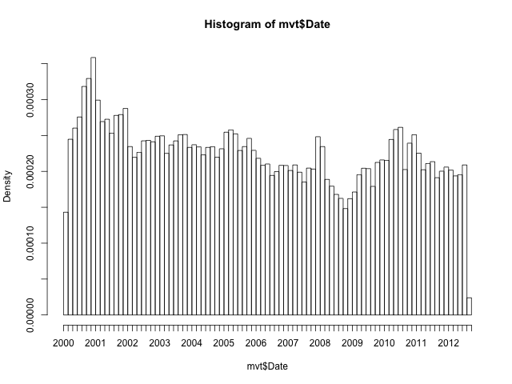
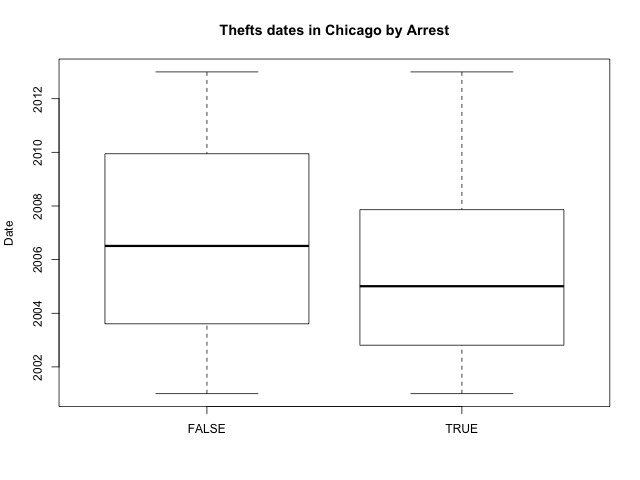
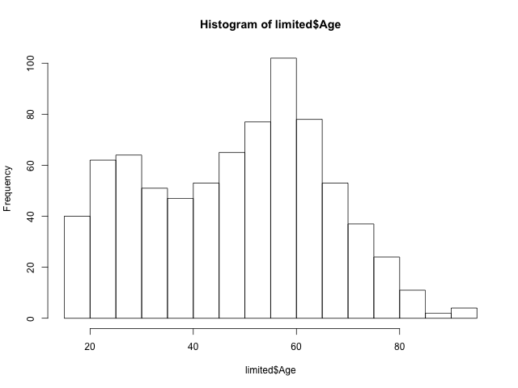
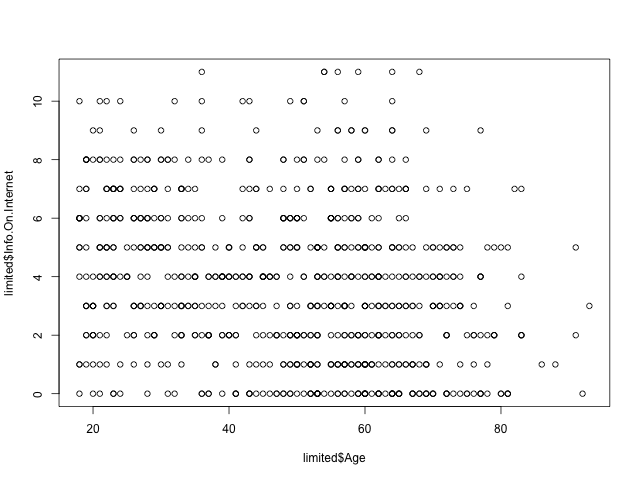
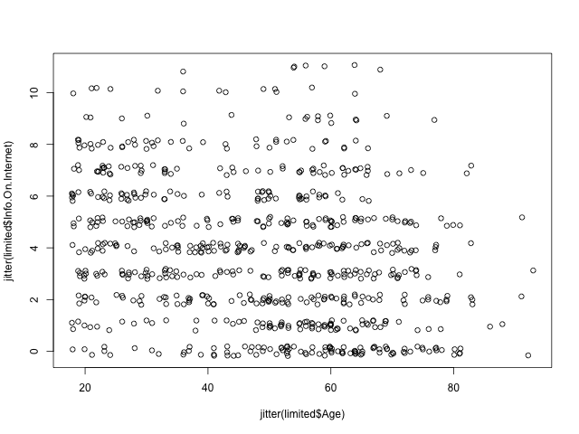

Homework Week 1
Homework week 1.
1 An analytical detective
Crime is an international concern, but it is documented and handled in very different ways in different countries. In the United States, violent crimes and property crimes are recorded by the Federal Bureau of Investigation (FBI). Additionally, each city documents crime, and some cities release data regarding crime rates. The city of Chicago, Illinois releases crime data from 2001 onward online.
Chicago is the third most populous city in the United States, with a population of over 2.7 million people. The city of Chicago is shown in the map below, with the state of Illinois highlighted in red.

There are two main types of crimes: violent crimes, and property crimes. In this problem, we'll focus on one specific type of property crime, called "motor vehicle theft" (sometimes referred to as grand theft auto). This is the act of stealing, or attempting to steal, a car. In this problem, we'll use some basic data analysis in R to understand the motor vehicle thefts in Chicago.
Please download the file mvtWeek1.csv for this problem (do not open this file in any spreadsheet software before completing this problem because it might change the format of the Date field). Here is a list of descriptions of the variables:
- ID: a unique identifier for each observation
- Date: the date the crime occurred
- LocationDescription: the location where the crime occurred
- Arrest: whether or not an arrest was made for the crime (TRUE if an arrest was made, and FALSE if an arrest was not made)
- Domestic: whether or not the crime was a domestic crime, meaning that it was committed against a family member (TRUE if it was domestic, and FALSE if it was not domestic)
- Beat: the area, or "beat" in which the crime occurred. This is the smallest regional division defined by the Chicago police department.
- District: the police district in which the crime occured. Each district is composed of many beats, and are defined by the Chicago Police Department.
- CommunityArea: the community area in which the crime occurred. Since the 1920s, Chicago has been divided into what are called "community areas", of which there are now 77. The community areas were devised in an attempt to create socially homogeneous regions.
- Year: the year in which the crime occurred.
- Latitude: the latitude of the location at which the crime occurred.
- Longitude: the longitude of the location at which the crime occurred.
1.1 DONE Problem 1.1 - Loading the Data (1 point possible)
Read the dataset mvtWeek1.csv into R, using the read.csv function, and call the data frame "mvt". Remember to navigate to the directory on your computer containing the file mvtWeek1.csv first. It may take a few minutes to read in the data, since it is pretty large. Then, use the str and summary functions to answer the following questions.
How many rows of data (observations) are in this dataset?
1.1.1 Download the data sets
In this part we can download the data
library(parallel) if(!file.exists("../data")) { dir.create("../data") } fileUrl <- "https://courses.edx.org/asset-v1:MITx+15.071x_2a+2T2015+type@asset+block/mvtWeek1.csv" fileName <- "mvtWeek1.csv" dataPath <- "../data" filePath <- paste(dataPath, fileName, sep = "/") if(!file.exists(filePath)) { download.file(fileUrl, destfile = filePath, method = "curl") list.files("../data") dateDownloaded <- date() }
writeLines(" Loading data into mvt dataframe") mvt <- read.table(filePath, sep = ",", header = TRUE) writeLines(" Initial analysis of data mvt") dim(mvt) str(mvt)
Loading data into mvt dataframe
Initial analysis of data mvt
[1] 191641 11
'data.frame': 191641 obs. of 11 variables:
$ ID : int 8951354 8951141 8952745 8952223 8951608 8950793 8950760 8951611 8951802 8950706 ...
$ Date : Factor w/ 131680 levels "1/1/01 0:01",..: 42823 42822 42822 42822 42821 42820 42819 42818 42816 42815 ...
$ LocationDescription: Factor w/ 78 levels "ABANDONED BUILDING",..: 72 72 62 72 72 72 72 72 72 72 ...
$ Arrest : logi FALSE FALSE FALSE FALSE FALSE TRUE ...
$ Domestic : logi FALSE FALSE FALSE FALSE FALSE FALSE ...
$ Beat : int 623 1213 1622 724 211 2521 423 231 1021 1215 ...
$ District : int 6 12 16 7 2 25 4 2 10 12 ...
$ CommunityArea : int 69 24 11 67 35 19 48 40 29 24 ...
$ Year : int 2012 2012 2012 2012 2012 2012 2012 2012 2012 2012 ...
$ Latitude : num 41.8 41.9 42 41.8 41.8 ...
$ Longitude : num -87.6 -87.7 -87.8 -87.7 -87.6 ...
1.1.2 Answer
191641 observations.
1.2 DONE Problem 1.2 - Loading the Data (1 point possible)
How many variables are in this dataset?
writeLines(" Dimension of the dataframe") dim(mvt) writeLines(" Names of the dataframe") names(mvt) writeLines(" Any NA in the dataframe") anyNA(mvt)
Dimension of the dataframe
[1] 191641 11
Names of the dataframe
[1] "ID" "Date" "LocationDescription"
[4] "Arrest" "Domestic" "Beat"
[7] "District" "CommunityArea" "Year"
[10] "Latitude" "Longitude"
Any NA in the dataframe
[1] TRUE
1.2.1 Answer
11 variables.
1.3 DONE Problem 1.3 - Loading the Data (1 point possible)
Using the "max" function, what is the maximum value of the variable "ID"?
maxID <- mvt[which.max(mvt$ID), ]
maxID$ID
[1] 9181151
1.3.1 Answer
9181151
1.4 DONE Problem 1.4 - Loading the Data (1 point possible)
What is the minimum value of the variable "Beat"?
minBeat <- mvt[which.min(mvt$Beat), ]
minBeat$Beat
[1] 111
1.4.1 Answer
111
1.5 DONE Problem 1.5 - Loading the Data (1 point possible)
How many observations have value TRUE in the Arrest variable (this is the number of crimes for which an arrest was made)?
TArrest <- subset(mvt, Arrest == TRUE) dim(TArrest)
[1] 15536 11
1.5.1 Answer
15536
1.6 DONE Problem 1.6 - Loading the Data (1 point possible)
How many observations have a LocationDescription value of ALLEY?
dim(subset(mvt, LocationDescription == "ALLEY"))
[1] 2308 11
1.6.1 Answer
2308
1.7 DONE Problem 2.1 - Understanding Dates in R (1 point possible)
In many datasets, like this one, you have a date field. Unfortunately, R does not automatically recognize entries that look like dates. We need to use a function in R to extract the date and time. Take a look at the first entry of Date (remember to use square brackets when looking at a certain entry of a variable).
In what format are the entries in the variable Date?
head(mvt$Date, 1)
[1] 12/31/12 23:15 131680 Levels: 1/1/01 0:01 1/1/01 0:05 1/1/01 0:30 1/1/01 10:00 ... 9/9/12 9:50
1.7.1 Answer
If you type mvt$Date1 in your R console, you can see that the first entry is 12/31/12 23:15. This must be in the format Month/Day/Year Hour:Minute.
1.8 DONE Problem 2.2 - Understanding Dates in R (1 point possible)
Now, let's convert these characters into a Date object in R. In your R console, type
DateConvert = as.Date(strptime(mvt$Date, "%m/%d/%y %H:%M"))
This converts the variable "Date" into a Date object in R. Take a look at the variable DateConvert using the summary function.
What is the month and year of the median date in our dataset? Enter your answer as "Month Year", without the quotes. (Ex: if the answer was 2008-03-28, you would give the answer "March 2008", without the quotes.)
DateConvert <- as.Date(strptime(mvt$Date, "%m/%d/%y %H:%M")) class(DateConvert) summary(DateConvert)
[1] "Date"
Min. 1st Qu. Median Mean 3rd Qu. Max.
"2001-01-01" "2003-07-10" "2006-05-21" "2006-08-23" "2009-10-24" "2012-12-31"
1.8.1 Answer
The median date is May 2006
1.9 DONE Problem 2.3 - Understanding Dates in R (1 point possible)
Now, let's extract the month and the day of the week, and add these variables to our data frame mvt. We can do this with two simple functions. Type the following commands in R:
mvt$Month = months(DateConvert) mvt$Weekday = weekdays(DateConvert)
This creates two new variables in our data frame, Month and Weekday, and sets them equal to the month and weekday values that we can extract from the Date object. Lastly, replace the old Date variable with DateConvert by typing:
mvt$Date = DateConvert
Using the table command, answer the following questions.
In which month did the fewest motor vehicle thefts occur?
head(mvt, 3) table(mvt$Month)
ID Date LocationDescription Arrest Domestic Beat
1 8951354 2012-12-31 STREET FALSE FALSE 623
2 8951141 2012-12-31 STREET FALSE FALSE 1213
3 8952745 2012-12-31 RESIDENTIAL YARD (FRONT/BACK) FALSE FALSE 1622
District CommunityArea Year Latitude Longitude Month Weekday
1 6 69 2012 41.75628 -87.62164 December Monday
2 12 24 2012 41.89879 -87.66130 December Monday
3 16 11 2012 41.96919 -87.76767 December Monday
April August December February January July June March
15280 16572 16426 13511 16047 16801 16002 15758
May November October September
16035 16063 17086 16060
1.9.1 Answer
February.
1.10 DONE Problem 2.4 - Understanding Dates in R (1 point possible)
On which weekday did the most motor vehicle thefts occur?
head(mvt, 3) table(mvt$Weekday)
ID Date LocationDescription Arrest Domestic Beat
1 8951354 2012-12-31 STREET FALSE FALSE 623
2 8951141 2012-12-31 STREET FALSE FALSE 1213
3 8952745 2012-12-31 RESIDENTIAL YARD (FRONT/BACK) FALSE FALSE 1622
District CommunityArea Year Latitude Longitude Month Weekday
1 6 69 2012 41.75628 -87.62164 December Monday
2 12 24 2012 41.89879 -87.66130 December Monday
3 16 11 2012 41.96919 -87.76767 December Monday
Friday Monday Saturday Sunday Thursday Tuesday Wednesday
29284 27397 27118 26316 27319 26791 27416
1.10.1 Answer
Friday.
1.11 DONE Problem 2.5 - Understanding Dates in R (1 point possible)
Each observation in the dataset represents a motor vehicle theft, and the Arrest variable indicates whether an arrest was later made for this theft. Which month has the largest number of motor vehicle thefts for which an arrest was made?
table(mvt$Month, mvt$Arrest)
FALSE TRUE
April 14028 1252
August 15243 1329
December 15029 1397
February 12273 1238
January 14612 1435
July 15477 1324
June 14772 1230
March 14460 1298
May 14848 1187
November 14807 1256
October 15744 1342
September 14812 1248
1.11.1 Answer
If you type table(mvt$Arrest,mvt$Month), you can see that the largest number of observations with Arrest=TRUE occurs in the month of January.
1.12 DONE Problem 3.1 - Visualizing Crime Trends (3 points possible)
Now, let's make some plots to help us better understand how crime has changed over time in Chicago. Throughout this problem, and in general, you can save your plot to a file. For more information, this website very clearly explains the process.
First, let's make a histogram of the variable Date. We'll add an extra argument, to specify the number of bars we want in our histogram. In your R console, type

Looking at the histogram, answer the following questions.
1.12.1 In general, does it look like crime increases or decreases from 2002 - 2012?
1.12.1.1 Answer
Decreases Decreases - correct
1.12.2 In general, does it look like crime increases or decreases from 2005 - 2008?
1.12.2.1 Answer
Decreases Decreases - correct
1.12.3 In general, does it look like crime increases or decreases from 2009 - 2011?
1.12.4 Answer
Increases Increases - correct
1.13 DONE Problem 3.2 - Visualizing Crime Trends (1 point possible)
Now, let's see how arrests have changed over time. Create a boxplot of the variable "Date", sorted by the variable "Arrest" (if you are not familiar with boxplots and would like to learn more, check out this tutorial). In a boxplot, the bold horizontal line is the median value of the data, the box shows the range of values between the first quartile and third quartile, and the whiskers (the dotted lines extending outside the box) show the minimum and maximum values, excluding any outliers (which are plotted as circles). Outliers are defined by first computing the difference between the first and third quartile values, or the height of the box. This number is called the Inter-Quartile Range (IQR). Any point that is greater than the third quartile plus the IQR or less than the first quartile minus the IQR is considered an outlier.

Does it look like there were more crimes for which arrests were made in the first half of the time period or the second half of the time period? (Note that the time period is from 2001 to 2012, so the middle of the time period is the beginning of 2007.)
1.13.1 Answer
First half.
You can create the boxplot with the command boxplot(mvt$Date ~ mvt$Arrest). If you look at the boxplot, the one for Arrest=TRUE is definitely skewed towards the bottom of the plot, meaning that there were more crimes for which arrests were made in the first half of the time period.
1.14 DONE Problem 3.3 - Visualizing Crime Trends (2 points possible)
Let's investigate this further. Use the table function for the next few questions.
For what proportion of motor vehicle thefts in 2001 was an arrest made?
Note: in this question and many others in the course, we are asking for an answer as a proportion. Therefore, your answer should take a value between 0 and 1.
library(lubridate) mvt$Year <- year(mvt$Date) table(mvt$Year, mvt$Arrest) writeLines("\n Proportion of vehicle thefts in 2001:") print(2152 / (2152 + 18517))
FALSE TRUE
2001 18517 2152
2002 16638 2115
2003 14859 1798
2004 15169 1693
2005 14956 1528
2006 14796 1302
2007 13068 1212
2008 13425 1020
2009 11327 840
2010 14796 701
2011 15012 625
2012 13542 550
Proportion of vehicle thefts in 2001:
[1] 0.1041173
1.14.1 Answer
If you create a table using the command table(mvt$Arrest, mvt$Year), the column for 2001 has 2152 observations with Arrest=TRUE and 18517 observations with Arrest=FALSE. The fraction of motor vehicle thefts in 2001 for which an arrest was made is thus
2152/(2152+18517) = 0.1041173.
1.15 DONE Problem 3.4 - Visualizing Crime Trends (1 point possible)
For what proportion of motor vehicle thefts in 2007 was an arrest made?
library(lubridate) mvt$Year <- year(mvt$Date) table(mvt$Year, mvt$Arrest) writeLines("\n Proportion of vehicle thefts in 2007:") print(1212 / (13068 + 1212))
FALSE TRUE
2001 18517 2152
2002 16638 2115
2003 14859 1798
2004 15169 1693
2005 14956 1528
2006 14796 1302
2007 13068 1212
2008 13425 1020
2009 11327 840
2010 14796 701
2011 15012 625
2012 13542 550
Proportion of vehicle thefts in 2007:
[1] 0.08487395
1.15.1 Answer
If you create a table using the command table(mvt$Arrest, mvt$Year), the column for 2007 has 1212 observations with Arrest=TRUE and 13068 observations with Arrest=FALSE. The fraction of motor vehicle thefts in 2007 for which an arrest was made is thus
1212/(1212+13068) = 0.08487395.
1.16 DONE Problem 3.5 - Visualizing Crime Trends (1 point possible)
For what proportion of motor vehicle thefts in 2012 was an arrest made?
library(lubridate) mvt$Year <- year(mvt$Date) table(mvt$Year, mvt$Arrest) writeLines("\n Proportion of vehicle thefts in 2012:") print(550 / (13542 + 550))
FALSE TRUE
2001 18517 2152
2002 16638 2115
2003 14859 1798
2004 15169 1693
2005 14956 1528
2006 14796 1302
2007 13068 1212
2008 13425 1020
2009 11327 840
2010 14796 701
2011 15012 625
2012 13542 550
Proportion of vehicle thefts in 2012:
[1] 0.03902924
Since there may still be open investigations for recent crimes, this could explain the trend we are seeing in the data. There could also be other factors at play, and this trend should be investigated further. However, since we don't know when the arrests were actually made, our detective work in this area has reached a dead end.
1.16.1 Answer
If you create a table using the command table(mvt$Arrest, mvt$Year), the column for 2012 has 550 observations with Arrest=TRUE and 13542 observations with Arrest=FALSE. The fraction of motor vehicle thefts in 2012 for which an arrest was made is thus
550/(550+13542) = 0.03902924.
1.17 DONE Problem 4.1 - Popular Locations (1 point possible)
Analyzing this data could be useful to the Chicago Police Department when deciding where to allocate resources. If they want to increase the number of arrests that are made for motor vehicle thefts, where should they focus their efforts?
We want to find the top five locations where motor vehicle thefts occur. If you create a table of the LocationDescription variable, it is unfortunately very hard to read since there are 78 different locations in the data set. By using the sort function, we can view this same table, but sorted by the number of observations in each category. In your R console, type:
head(sort(table(mvt$LocationDescription), decreasing = TRUE), 6)
STREET PARKING LOT/GARAGE(NON.RESID.)
156564 14852
OTHER ALLEY
4573 2308
GAS STATION DRIVEWAY - RESIDENTIAL
2111 1675
Which locations are the top five locations for motor vehicle thefts, excluding the "Other" category? You should select 5 of the following options.
1.17.1 Answer
If you type sort(table(mvt$LocationDescription)), the locations with the largest number of motor vehicle thefts are listed last. These are Street, Parking Lot/Garage (Non. Resid.), Alley, Gas Station, and Driveway - Residential.
1.18 DONE Problem 4.2 - Popular Locations (1 point possible)
Create a subset of your data, only taking observations for which the theft happened in one of these five locations, and call this new data set "Top5". To do this, you can use the | symbol. In lecture, we used the & symbol to use two criteria to make a subset of the data. To only take observations that have a certain value in one variable or the other, the | character can be used in place of the & symbol. This is also called a logical "or" operation.
Alternately, you could create five different subsets, and then merge them together into one data frame using rbind.
How many observations are in Top5?
Top5 <- subset(mvt, LocationDescription == "STREET" | LocationDescription == "PARKING LOT/GARAGE(NON.RESID.)" | LocationDescription == "ALLEY" | LocationDescription == "GAS STATION" | LocationDescription == "DRIVEWAY - RESIDENTIAL") head(Top5, 5) writeLines(" The number of observations in Top5 are:") print(dim(Top5))
ID Date LocationDescription Arrest Domestic Beat District
1 8951354 2012-12-31 STREET FALSE FALSE 623 6
2 8951141 2012-12-31 STREET FALSE FALSE 1213 12
4 8952223 2012-12-31 STREET FALSE FALSE 724 7
5 8951608 2012-12-31 STREET FALSE FALSE 211 2
6 8950793 2012-12-31 STREET TRUE FALSE 2521 25
CommunityArea Year Latitude Longitude Month Weekday
1 69 2012 41.75628 -87.62164 December Monday
2 24 2012 41.89879 -87.66130 December Monday
4 67 2012 41.76933 -87.65773 December Monday
5 35 2012 41.83757 -87.62176 December Monday
6 19 2012 41.92856 -87.75400 December Monday
The number of observations in Top5 are:
[1] 177510 13
1.18.1 Answer
The procedure above is OK. We can do this in other way?
Another way of doing this would be to use the %in% operator in R. This operator checks for inclusion in a set. You can create the same subset by typing the following two lines in your R console:
TopLocations <- c("STREET", "PARKING LOT/GARAGE(NON.RESID.)", "ALLEY", "GAS STATION", "DRIVEWAY - RESIDENTIAL") Top5 <- subset(mvt, LocationDescription %in% TopLocations) head(Top5, 5) writeLines(" The number of observations in Top5 are:") print(dim(Top5))
ID Date LocationDescription Arrest Domestic Beat District
1 8951354 2012-12-31 STREET FALSE FALSE 623 6
2 8951141 2012-12-31 STREET FALSE FALSE 1213 12
4 8952223 2012-12-31 STREET FALSE FALSE 724 7
5 8951608 2012-12-31 STREET FALSE FALSE 211 2
6 8950793 2012-12-31 STREET TRUE FALSE 2521 25
CommunityArea Year Latitude Longitude Month Weekday
1 69 2012 41.75628 -87.62164 December Monday
2 24 2012 41.89879 -87.66130 December Monday
4 67 2012 41.76933 -87.65773 December Monday
5 35 2012 41.83757 -87.62176 December Monday
6 19 2012 41.92856 -87.75400 December Monday
The number of observations in Top5 are:
[1] 177510 13
1.19 DONE Problem 4.3 - Popular Locations (2 points possible)
R will remember the other categories of the LocationDescription variable from the original dataset, so running table(Top5$LocationDescription) will have a lot of unnecessary output. To make our tables a bit nicer to read, we can refresh this factor variable. In your R console, type:
Top5$LocationDescription <- factor(Top5$LocationDescription)
If you run the str or table function on Top5 now, you should see that LocationDescription now only has 5 values, as we expect.
str(Top5)
'data.frame': 177510 obs. of 13 variables: $ ID : int 8951354 8951141 8952223 8951608 8950793 8950760 8951611 8951802 8950706 8951585 ... $ Date : Date, format: "2012-12-31" "2012-12-31" ... $ LocationDescription: Factor w/ 5 levels "ALLEY","DRIVEWAY - RESIDENTIAL",..: 5 5 5 5 5 5 5 5 5 5 ... $ Arrest : logi FALSE FALSE FALSE FALSE TRUE FALSE ... $ Domestic : logi FALSE FALSE FALSE FALSE FALSE FALSE ... $ Beat : int 623 1213 724 211 2521 423 231 1021 1215 1011 ... $ District : int 6 12 7 2 25 4 2 10 12 10 ... $ CommunityArea : int 69 24 67 35 19 48 40 29 24 29 ... $ Year : num 2012 2012 2012 2012 2012 ... $ Latitude : num 41.8 41.9 41.8 41.8 41.9 ... $ Longitude : num -87.6 -87.7 -87.7 -87.6 -87.8 ... $ Month : chr "December" "December" "December" "December" ... $ Weekday : chr "Monday" "Monday" "Monday" "Monday" ...
Use the Top5 data frame to answer the remaining questions.
One of the locations has a much higher arrest rate than the other locations. Which is it? Please enter the text in exactly the same way as how it looks in the answer options for Problem 4.1.
table(Top5$LocationDescription, Top5$Arrest) print(249 / (2059 + 249)) # ALLEY print(132 / (1543 + 132)) # DRIVEWAY - RESIDENTIAL print(439 / (1672 + 439)) # GAS STATION print(1603 / (13249 + 1603)) # PARKING LOT/GARAGE(NON.RESID.) print(11595 / (144969 + 11595)) # STREET writeLines("The highest arrest rate is located at: GAS STATION") answer <- paste("with a", 439 / (1672 + 439), "rate.", sep = " ") print(answer)
FALSE TRUE
ALLEY 2059 249
DRIVEWAY - RESIDENTIAL 1543 132
GAS STATION 1672 439
PARKING LOT/GARAGE(NON.RESID.) 13249 1603
STREET 144969 11595
[1] 0.1078856
[1] 0.07880597
[1] 0.2079583
[1] 0.1079316
[1] 0.07405917
The highest arrest rate is located at: GAS STATION
[1] "with a 0.207958313595452 rate."
1.19.1 Answer
If you create a table of LocationDescription compared to Arrest, table(Top5$LocationDescription, Top5$Arrest), you can then compute the fraction of motor vehicle thefts that resulted in arrests at each location. Gas Station has by far the highest percentage of arrests, with over 20% of motor vehicle thefts resulting in an arrest.
1.20 DONE Problem 4.4 - Popular Locations (1 point possible)
On which day of the week do the most motor vehicle thefts at gas stations happen?
table(Top5$Weekday, Top5$LocationDescription)
ALLEY DRIVEWAY - RESIDENTIAL GAS STATION
Friday 385 257 332
Monday 320 255 280
Saturday 341 202 338
Sunday 307 221 336
Thursday 315 263 282
Tuesday 323 243 270
Wednesday 317 234 273
PARKING LOT/GARAGE(NON.RESID.) STREET
Friday 2331 23773
Monday 2128 22305
Saturday 2199 22175
Sunday 1936 21756
Thursday 2082 22296
Tuesday 2073 21888
Wednesday 2103 22371
1.20.1 Answer
Saturday.
1.21 DONE Problem 4.5 - Popular Locations (1 point possible)
On which day of the week do the fewest motor vehicle thefts in residential driveways happen?
table(Top5$Weekday, Top5$LocationDescription)
ALLEY DRIVEWAY - RESIDENTIAL GAS STATION
Friday 385 257 332
Monday 320 255 280
Saturday 341 202 338
Sunday 307 221 336
Thursday 315 263 282
Tuesday 323 243 270
Wednesday 317 234 273
PARKING LOT/GARAGE(NON.RESID.) STREET
Friday 2331 23773
Monday 2128 22305
Saturday 2199 22175
Sunday 1936 21756
Thursday 2082 22296
Tuesday 2073 21888
Wednesday 2103 22371
1.21.1 Answer
Saturday.
2 Stock dynamics
A stock market is where buyers and sellers trade shares of a company, and is one of the most popular ways for individuals and companies to invest money. The size of the world stock market is now estimated to be in the trillions. The largest stock market in the world is the New York Stock Exchange (NYSE), located in New York City. About 2,800 companies are listed on the NSYE. In this problem, we'll look at the monthly stock prices of five of these companies: IBM, General Electric (GE), Procter and Gamble, Coca Cola, and Boeing. The data used in this problem comes from Infochimps.
Download and read the following files into R, using the read.csv function: IBMStock.csv, GEStock.csv, ProcterGambleStock.csv, CocaColaStock.csv, and BoeingStock.csv. (Do not open these files in any spreadsheet software before completing this problem because it might change the format of the Date field.)
Call the data frames "IBM", "GE", "ProcterGamble", "CocaCola", and "Boeing", respectively. Each data frame has two variables, described as follows:
- Date: the date of the stock price, always given as the first of the month.
- StockPrice: the average stock price of the company in the given month.
In this problem, we'll take a look at how the stock dynamics of these companies have changed over time.
2.1 DONE Downloading and loading the data
In this first part we will download and load each dataset in a dataframe.
2.1.1 Download the data sets
In this part we can download the data
library(parallel) if(!file.exists("../data")) { dir.create("../data") } fileUrl <- c("https://courses.edx.org/asset-v1:MITx+15.071x_2a+2T2015+type@asset+block/IBMStock.csv", "https://courses.edx.org/asset-v1:MITx+15.071x_2a+2T2015+type@asset+block/GEStock.csv", "https://courses.edx.org/asset-v1:MITx+15.071x_2a+2T2015+type@asset+block/ProcterGambleStock.csv", "https://courses.edx.org/asset-v1:MITx+15.071x_2a+2T2015+type@asset+block/CocaColaStock.csv", "https://courses.edx.org/asset-v1:MITx+15.071x_2a+2T2015+type@asset+block/BoeingStock.csv") fileName <- c("IBMStock.csv", "GEStock.csv", "ProcterGambleStock.csv", "CocaColaStock.csv", "BoeingStock.csv") dataPath <- "../data" for(i in 1:5) { filePath <- paste(dataPath, fileName[i], sep = "/") if(!file.exists(filePath)) { download.file(fileUrl[i], destfile = filePath, method = "curl") list.files("../data") } }
2.1.2 Load the data sets in their respective dataframe
writeLines(" Loading data into their data frames.") IBM <- read.table("../data/IBMStock.csv", sep = ",", header = TRUE) GE <- read.table("../data/GEStock.csv", sep = ",", header = TRUE) ProcterGamble <- read.table("../data/ProcterGambleStock.csv", sep = ",", header = TRUE) CocaCola <- read.table("../data/CocaColaStock.csv", sep = ",", header = TRUE) Boeing <- read.table("../data/BoeingStock.csv", sep = ",", header = TRUE)
Loading data into their data frames.
2.2 DONE Problem 1.1 - Summary Statistics (1 point possible)
Before working with these data sets, we need to convert the dates into a format that R can understand. Take a look at the structure of one of the datasets using the str function. Right now, the date variable is stored as a factor. We can convert this to a "Date" object in R by using the following five commands (one for each data set):
IBM$Date = as.Date(IBM$Date, "%m/%d/%y") GE$Date = as.Date(GE$Date, "%m/%d/%y") CocaCola$Date = as.Date(CocaCola$Date, "%m/%d/%y") ProcterGamble$Date = as.Date(ProcterGamble$Date, "%m/%d/%y") Boeing$Date = as.Date(Boeing$Date, "%m/%d/%y")
The first argument to the as.Date function is the variable we want to convert, and the second argument is the format of the Date variable. We can just overwrite the original Date variable values with the output of this function. Now, answer the following questions using the str and summary functions.
Our five datasets all have the same number of observations. How many observations are there in each data set?
writeLines(" Initial analysis of data frames")
dim(IBM)
str(IBM)
dim(GE)
str(GE)
dim(ProcterGamble)
str(ProcterGamble)
dim(CocaCola)
str(CocaCola)
dim(Boeing)
str(Boeing)
Initial analysis of data frames
[1] 480 2
'data.frame': 480 obs. of 2 variables:
$ Date : Date, format: "1970-01-01" "1970-02-01" ...
$ StockPrice: num 360 347 327 320 270 ...
[1] 480 2
'data.frame': 480 obs. of 2 variables:
$ Date : Date, format: "1970-01-01" "1970-02-01" ...
$ StockPrice: num 74.3 70 72.2 74.3 66.7 ...
[1] 480 2
'data.frame': 480 obs. of 2 variables:
$ Date : Date, format: "1970-01-01" "1970-02-01" ...
$ StockPrice: num 111.9 111.5 108.5 106.3 73.3 ...
[1] 480 2
'data.frame': 480 obs. of 2 variables:
$ Date : Date, format: "1970-01-01" "1970-02-01" ...
$ StockPrice: num 83.4 81.6 81.3 76.8 69.3 ...
[1] 480 2
'data.frame': 480 obs. of 2 variables:
$ Date : Date, format: "1970-01-01" "1970-02-01" ...
$ StockPrice: num 27.9 22.4 23.1 21.6 18.9 ...
2.2.1 Answer
Using the str function, we can see that each data set has 480 observations. We have monthly data for 40 years, so there are 12*40 = 480 observations.
480 observations.
2.3 DONE Problem 1.2 - Summary Statistics (1 point possible)
What is the earliest year in our datasets?
library(lubridate)
head(sort(year(IBM$Date)))
head(sort(year(GE$Date)))
head(sort(year(ProcterGamble$Date)))
head(sort(year(CocaCola$Date)))
head(sort(year(Boeing$Date)))
summary(IBM$Date)
summary(GE$Date)
summary(ProcterGamble$Date)
summary(CocaCola$Date)
summary(Boeing$Date)
[1] 1970 1970 1970 1970 1970 1970
[1] 1970 1970 1970 1970 1970 1970
[1] 1970 1970 1970 1970 1970 1970
[1] 1970 1970 1970 1970 1970 1970
[1] 1970 1970 1970 1970 1970 1970
Min. 1st Qu. Median Mean 3rd Qu. Max.
"1970-01-01" "1979-12-24" "1989-12-16" "1989-12-15" "1999-12-08" "2009-12-01"
Min. 1st Qu. Median Mean 3rd Qu. Max.
"1970-01-01" "1979-12-24" "1989-12-16" "1989-12-15" "1999-12-08" "2009-12-01"
Min. 1st Qu. Median Mean 3rd Qu. Max.
"1970-01-01" "1979-12-24" "1989-12-16" "1989-12-15" "1999-12-08" "2009-12-01"
Min. 1st Qu. Median Mean 3rd Qu. Max.
"1970-01-01" "1979-12-24" "1989-12-16" "1989-12-15" "1999-12-08" "2009-12-01"
Min. 1st Qu. Median Mean 3rd Qu. Max.
"1970-01-01" "1979-12-24" "1989-12-16" "1989-12-15" "1999-12-08" "2009-12-01"
2.3.1 Answer
Using the summary function, the minimum value of the Date variable is January 1, 1970 for any dataset.
2.4 DONE Problem 1.3 - Summary Statistics (1 point possible)
What is the latest year in our datasets?
summary(IBM$Date) summary(GE$Date) summary(ProcterGamble$Date) summary(CocaCola$Date) summary(Boeing$Date)
Min. 1st Qu. Median Mean 3rd Qu. Max.
"1970-01-01" "1979-12-24" "1989-12-16" "1989-12-15" "1999-12-08" "2009-12-01"
Min. 1st Qu. Median Mean 3rd Qu. Max.
"1970-01-01" "1979-12-24" "1989-12-16" "1989-12-15" "1999-12-08" "2009-12-01"
Min. 1st Qu. Median Mean 3rd Qu. Max.
"1970-01-01" "1979-12-24" "1989-12-16" "1989-12-15" "1999-12-08" "2009-12-01"
Min. 1st Qu. Median Mean 3rd Qu. Max.
"1970-01-01" "1979-12-24" "1989-12-16" "1989-12-15" "1999-12-08" "2009-12-01"
Min. 1st Qu. Median Mean 3rd Qu. Max.
"1970-01-01" "1979-12-24" "1989-12-16" "1989-12-15" "1999-12-08" "2009-12-01"
2.4.1 Answer
Using the summary function, the maximum value of the Date variable is December 1, 2009 for any dataset.
2.5 DONE Problem 1.4 - Summary Statistics (1 point possible)
What is the mean stock price of IBM over this time period?
names(IBM)
writeLines("The mean is:")
mean(IBM$StockPrice)
[1] "Date" "StockPrice" The mean is: [1] 144.375
2.5.1 Answer
By typing summary(IBM), we can see that the mean value of the IBM StockPrice is 144.38.
2.6 DONE Problem 1.5 - Summary Statistics (1 point possible)
What is the minimum stock price of General Electric (GE) over this time period?
summary(GE$StockPrice)
Min. 1st Qu. Median Mean 3rd Qu. Max. 9.294 44.210 55.810 59.300 72.230 156.800
2.7 DONE Problem 1.6 - Summary Statistics (1 point possible)
What is the maximum stock price of Coca-Cola over this time period?
summary(CocaCola$StockPrice)
Min. 1st Qu. Median Mean 3rd Qu. Max. 30.06 42.76 51.44 60.03 69.62 146.60
2.7.1 Answer
By typing summary(CocaCola), we can see that the maximum value of the Coca-Cola StockPrice is 146.58.
2.8 DONE Problem 1.7 - Summary Statistics (1 point possible)
What is the median stock price of Boeing over this time period?
summary(Boeing$StockPrice)
Min. 1st Qu. Median Mean 3rd Qu. Max. 12.74 34.64 44.88 46.59 57.21 107.30
2.8.1 Answer
By typing summary(Boeing), we can see that the median value of the Boeing StockPrice is 44.88.
2.9 DONE Problem 1.8 - Summary Statistics (1 point possible)
What is the standard deviation of the stock price of Procter&Gamble over this time period?
sd(ProcterGamble$StockPrice)
[1] 18.19414
2.9.1 Answer
By typing sd(ProcterGamble$StockPrice), we can see that the standard deviation of the Procter&Gamble StockPrice is 18.19414.
2.10 DONE Problem 2.1 - Visualizing Stock Dynamics (2 points possible)
Let's plot the stock prices to see if we can visualize trends in stock prices during this time period. Using the plot function, plot the Date on the x-axis and the StockPrice on the y-axis, for Coca-Cola.
This plots our observations as points, but we would really like to see a line instead, since this is a continuous time period. To do this, add the argument type="l" to your plot command, and re-generate the plot (the character is quotes is the letter l, for line). You should now see a line plot of the Coca-Cola stock price.
Around what year did Coca-Cola has its highest stock price in this time period?
2.10.1 Answer
You can generate the plot using the command plot(CocaCola$Date, CocaCola$StockPrice, type="l"). Looking at the plot, the maximum value of the StockPrice is around 1973, and the minimum value of the StockPrice is around 1980.
2.11 DONE Problem 2.2 - Visualizing Stock Dynamics (1 point possible)
Now, let's add the line for Procter & Gamble too. You can add a line to a plot in R by using the lines function instead of the plot function. Keeping the plot for Coca-Cola open, type in your R console:
Unfortunately, it's hard to tell which line is which. Let's fix this by giving each line a color. First, re-run the plot command for Coca-Cola, but add the argument col="red". You should see the plot for Coca-Cola show up again, but this time in red. Now, let's add the Procter & Gamble line (using the lines function like we did before), adding the argument col="blue". You should now see in your plot the Coca-Cola stock price in red, and the Procter & Gamble stock price in blue.
As an alternative choice to changing the colors, you could instead change the line type of the Procter & Gamble line by adding the argument lty=2. This will make the Procter & Gamble line dashed.

Using this plot, answer the following questions.
In March of 2000, the technology bubble burst, and a stock market crash occurred. According to this plot, which company's stock dropped more?
To answer this question and the ones that follow, you may find it useful to draw a vertical line at a certain date. To do this, type the command
abline(v=as.Date(c("2000-03-01")), lwd=2)
in your R console, with the plot still open. This generates a vertical line at the date March 1, 2000. The argument lwd=2 makes the line a little thicker. You can change the date in this command to generate the vertical line in different locations.
2.11.1 Answer
You can generate the combined plot for Coca-Cola and Procter & Gamble by using the following commands in R:
Looking at the plot, around 2000 both stocks drop, but Procter and Gamble's stock drops more.
2.12 DONE Problem 2.3 - Visualizing Stock Dynamics (2 points possible)
Answer these questions using the plot you generated in the previous problem.
2.12.1 Question a
Around 1983, the stock for one of these companies (Coca-Cola or Procter and Gamble) was going up, while the other was going down. Which one was going up?
2.12.1.1 Answer
Cocacola. We can see that around 1983 the stock for Coca-Cola has an upward trend.
2.12.2 Question b
In the time period shown in the plot, which stock generally has lower values?
2.12.2.1 Answer
Cocacola. Looking at the plot, the red line (for Coca-Cola) is generally lower than the blue line.
2.13 DONE Problem 3.1 - Visualizing Stock Dynamics 1995-2005 (1 point possible)
Let's take a look at how the stock prices changed from 1995-2005 for all five companies. In your R console, start by typing the following plot command:
plot(CocaCola$Date[301:432], CocaCola$StockPrice[301:432], type="l", col="red", ylim=c(0,210))
This will plot the CocaCola stock prices from 1995 through 2005, which are the observations numbered from 301 to 432. The additional argument, ylim=c(0,210), makes the y-axis range from 0 to 210. This will allow us to see all of the stock values when we add in the other companies.
Now, use the lines function to add in the other four companies, remembering to only plot the observations from 1995 to 2005, or [301:432]. You don't need the "type" or "ylim" arguments for the lines function, but remember to make each company a different color so that you can tell them apart. Some color options are "red", "blue", "green", "purple", "orange", and "black". To see all of the color options in R, type colors() in your R console.
(If you prefer to change the type of the line instead of the color, here are some options for changing the line type: lty=2 will make the line dashed, lty=3 will make the line dotted, lty=4 will make the line alternate between dashes and dots, and lty=5 will make the line long-dashed.)
Use this plot to answer the following four questions.
2.13.1 Question 1
Which stock fell the most right after the technology bubble burst in March 2000?
2.13.1.1 Answer
GE. By looking at this plot, you can see that the stock for General Electric falls significantly more than the other stocks after the technology bubble burst.
2.14 DONE Problem 3.2 - Visualizing Stock Dynamics 1995-2005 (1 point possible)
Which stock reaches the highest value in the time period 1995-2005?
2.14.1 Answer
IBM. Looking at the plot (see the previous explanation for how to create the plot), you can see that IBM has the highest value, around 1999.
2.15 DONE Problem 3.3 - Visualizing Stock Dynamics 1995-2005 (1 point possible)

In October of 1997, there was a global stock market crash that was caused by an economic crisis in Asia. Comparing September 1997 to November 1997, which companies saw a decreasing trend in their stock price? (Select all that apply.)
2.15.1 Answer
Looking at the plot, two companies had a decreasing trend in stock prices from September 1997 to November 1997: Boeing and Procter & Gamble.
2.16 DONE Problem 3.4 - Visualizing Stock Dynamics 1995-2005 (1 point possible)
In the last two years of this time period (2004 and 2005) which stock seems to be performing the best, in terms of increasing stock price?
2.16.1 Answer
Looking at the plot, you can see that Boeing is steadily increasing from 2004 to the beginning of 2006.
2.17 DONE Problem 4.1 - Monthly Trends (1 point possible)
Lastly, let's see if stocks tend to be higher or lower during certain months. Use the tapply command to calculate the mean stock price of IBM, sorted by months. To sort by months, use
months(IBM$Date)
as the second argument of the tapply function.
For IBM, compare the monthly averages to the overall average stock price. In which months has IBM historically had a higher stock price (on average)? Select all that apply.
names(IBM) print("The over mean of the IBM stock price is:") mean(IBM$StockPrice) print("Mean stock price of IBM by month:") tapply(IBM$StockPrice, months(IBM$Date), mean)
[1] "Date" "StockPrice"
[1] "The over mean of the IBM stock price is:"
[1] 144.375
[1] "Mean stock price of IBM by month:"
April August December February January July June March
152.1168 140.1455 140.7593 152.6940 150.2384 139.0670 139.0907 152.4327
May November October September
151.5022 138.0187 137.3466 139.0885
2.17.1 Answer
The overall average stock price for IBM is 144.375, which can be computed using the command mean(IBM$StockPrice). Comparing the monthly averages to this, using the command tapply(IBM$StockPrice, months(IBM$Date), mean), we can see that the price has historically been higher than average January - May, and lower than average during the remaining months.
2.18 DONE Problem 4.2 - Monthly Trends (1 point possible)
Repeat the tapply function from the previous problem for each of the other four companies, and use the output to answer the remaining questions.
General Electric and Coca-Cola both have their highest average stock price in the same month. Which month is this?
names(GE); names(CocaCola) writeLines("\nThe over mean of the GE stock price is:") mean(GE$StockPrice) writeLines("\nThe over mean of the Coca-Cola stock price is:") mean(CocaCola$StockPrice) writeLines("\nMean stock price of GE by month:") tapply(GE$StockPrice, months(GE$Date), mean) writeLines("\nMean stock price of Coca-Cola by month:") tapply(CocaCola$StockPrice, months(CocaCola$Date), mean)
[1] "Date" "StockPrice"
[1] "Date" "StockPrice"
The over mean of the GE stock price is:
[1] 59.3035
The over mean of the Coca-Cola stock price is:
[1] 60.02973
Mean stock price of GE by month:
April August December February January July June March
64.48009 56.50315 59.10217 62.52080 62.04511 56.73349 56.46844 63.15055
May November October September
60.87135 57.28879 56.23897 56.23913
Mean stock price of Coca-Cola by month:
April August December February January July June March
62.68888 58.88014 59.73223 60.73475 60.36849 58.98346 60.81208 62.07135
May November October September
61.44358 59.10268 57.93887 57.60024
2.18.1 Answer
General Electric has an average stock price of 64.48 in April, which is higher than any other month. Coca-Cola has an average stock price of 62.69 in April, which is higher than any other month.
2.19 DONE Problem 4.3 - Monthly Trends (1 point possible)
writeLines("\nThe over mean of the Boeing stock price is:") mean(Boeing$StockPrice) writeLines("\nThe over mean of the Coca-Cola stock price is:") mean(CocaCola$StockPrice) writeLines("\nThe over mean of the GE stock price is:") mean(GE$StockPrice) writeLines("\nThe over mean of the IBM stock price is:") mean(IBM$StockPrice) writeLines("\nThe over mean of the Procter&Gamble stock price is:") mean(ProcterGamble$StockPrice) writeLines("\n---------\n") writeLines("\nMean stock price of Boeing by month:") tapply(Boeing$StockPrice, months(Boeing$Date), mean) writeLines("\nMean stock price of Coca-Cola by month:") tapply(CocaCola$StockPrice, months(CocaCola$Date), mean) writeLines("\nMean stock price of GE by month:") tapply(GE$StockPrice, months(GE$Date), mean) writeLines("\nMean stock price of IBM by month:") tapply(IBM$StockPrice, months(IBM$Date), mean) writeLines("\nMean stock price of ProcterGamble by month:") tapply(ProcterGamble$StockPrice, months(ProcterGamble$Date), mean)
The over mean of the Boeing stock price is:
[1] 46.59293
The over mean of the Coca-Cola stock price is:
[1] 60.02973
The over mean of the GE stock price is:
[1] 59.3035
The over mean of the IBM stock price is:
[1] 144.375
The over mean of the Procter&Gamble stock price is:
[1] 77.70452
---------
Mean stock price of Boeing by month:
April August December February January July June March
47.04686 46.86311 46.17315 46.89223 46.51097 46.55360 47.38525 46.88208
May November October September
48.13716 45.14990 45.21603 46.30485
Mean stock price of Coca-Cola by month:
April August December February January July June March
62.68888 58.88014 59.73223 60.73475 60.36849 58.98346 60.81208 62.07135
May November October September
61.44358 59.10268 57.93887 57.60024
Mean stock price of GE by month:
April August December February January July June March
64.48009 56.50315 59.10217 62.52080 62.04511 56.73349 56.46844 63.15055
May November October September
60.87135 57.28879 56.23897 56.23913
Mean stock price of IBM by month:
April August December February January July June March
152.1168 140.1455 140.7593 152.6940 150.2384 139.0670 139.0907 152.4327
May November October September
151.5022 138.0187 137.3466 139.0885
Mean stock price of ProcterGamble by month:
April August December February January July June March
77.68671 76.82266 78.29661 79.02575 79.61798 76.64556 77.39275 77.34761
May November October September
77.85958 78.45610 76.67903 76.62385
For the months of December and January, every company's average stock is higher in one month and lower in the other. In which month are the stock prices lower?
2.19.1 Answer
Having lower stock prices in December is a trend that holds for all five companies.
2.20 DONE Ready to buy!
After seeing these trends, we are ready to buy stock in certain months and sell it in others! But, we should be careful, because one really good or really bad year could skew the average to show a trend that is not really there in general.
3 Demographics and Employment in The United States
In the wake of the Great Recession of 2009, there has been a good deal of focus on employment statistics, one of the most important metrics policymakers use to gauge the overall strength of the economy. In the United States, the government measures unemployment using the Current Population Survey (CPS), which collects demographic and employment information from a wide range of Americans each month. In this exercise, we will employ the topics reviewed in the lectures as well as a few new techniques using the September 2013 version of this rich, nationally representative dataset (available online).
The observations in the dataset represent people surveyed in the September 2013 CPS who actually completed a survey. While the full dataset has 385 variables, in this exercise we will use a more compact version of the dataset, CPSData.csv, which has the following variables:
- PeopleInHousehold: The number of people in the interviewee's household.
- Region: The census region where the interviewee lives.
- State: The state where the interviewee lives.
- MetroAreaCode: A code that identifies the metropolitan area in which the interviewee lives (missing if the interviewee does not live in a metropolitan area). The mapping from codes to names of metropolitan areas is provided in the file MetroAreaCodes.csv.
- Age: The age, in years, of the interviewee. 80 represents people aged 80-84, and 85 represents people aged 85 and higher.
- Married: The marriage status of the interviewee.
- Sex: The sex of the interviewee.
- Education: The maximum level of education obtained by the interviewee.
- Race: The race of the interviewee.
- Hispanic: Whether the interviewee is of Hispanic ethnicity.
- CountryOfBirthCode: A code identifying the country of birth of the interviewee. The mapping from codes to names of countries is provided in the file CountryCodes.csv.
- Citizenship: The United States citizenship status of the interviewee.
- EmploymentStatus: The status of employment of the interviewee.
- Industry: The industry of employment of the interviewee (only available if they are employed).
3.1 DONE Problem 1.1 - Loading and Summarizing the Dataset (1 point possible)
Load the dataset from CPSData.csv into a data frame called CPS, and view the dataset with the summary() and str() commands.
How many interviewees are in the dataset?
In this first part we will download and load each dataset in a dataframe.
3.1.1 Download the data sets
In this part we can download the data
library(parallel) if(!file.exists("../data")) { dir.create("../data") } fileUrl <- "https://courses.edx.org/asset-v1:MITx+15.071x_2a+2T2015+type@asset+block/CPSData.csv" fileName <- "CPSData.csv" dataPath <- "../data" filePath <- paste(dataPath, fileName, sep = "/") if(!file.exists(filePath)) { download.file(fileUrl, destfile = filePath, method = "curl") list.files("../data") } list.files("../data")
[1] "AnonymityPoll.csv" "BoeingStock.csv" "CPSData.csv" [4] "CocaColaStock.csv" "CountryCodes.csv" "FluTest.csv" [7] "FluTrain.csv" "GEStock.csv" "IBMStock.csv" [10] "MetroAreaCodes.csv" "NBA_test.csv" "NBA_train.csv" [13] "ProcterGambleStock.csv" "README.md" "USDA.csv" [16] "WHO.csv" "WHO_Europe.csv" "baseball.csv" [19] "climate_change.csv" "mvtWeek1.csv" "pisa2009test.csv" [22] "pisa2009train.csv" "wine.csv" "wine_test.csv"
3.1.2 Load the data sets in their respective dataframe
writeLines(" Loading data into their data frames...") CPS <- read.table("../data/CPSData.csv", sep = ",", header = TRUE) writeLines("\n Summary of CPS dataframe:") summary(CPS) writeLines("\n str command of the CPS dataframe") str(CPS) writeLines("\n Number of interviewees:") nrow(CPS)
Loading data into their data frames...
Summary of CPS dataframe:
PeopleInHousehold Region State MetroAreaCode
Min. : 1.000 Midwest :30684 California :11570 Min. :10420
1st Qu.: 2.000 Northeast:25939 Texas : 7077 1st Qu.:21780
Median : 3.000 South :41502 New York : 5595 Median :34740
Mean : 3.284 West :33177 Florida : 5149 Mean :35075
3rd Qu.: 4.000 Pennsylvania: 3930 3rd Qu.:41860
Max. :15.000 Illinois : 3912 Max. :79600
(Other) :94069 NA's :34238
Age Married Sex
Min. : 0.00 Divorced :11151 Female:67481
1st Qu.:19.00 Married :55509 Male :63821
Median :39.00 Never Married:30772
Mean :38.83 Separated : 2027
3rd Qu.:57.00 Widowed : 6505
Max. :85.00 NA's :25338
Education Race Hispanic
High school :30906 American Indian : 1433 Min. :0.0000
Bachelor's degree :19443 Asian : 6520 1st Qu.:0.0000
Some college, no degree:18863 Black : 13913 Median :0.0000
No high school diploma :16095 Multiracial : 2897 Mean :0.1393
Associate degree : 9913 Pacific Islander: 618 3rd Qu.:0.0000
(Other) :10744 White :105921 Max. :1.0000
NA's :25338
CountryOfBirthCode Citizenship EmploymentStatus
Min. : 57.00 Citizen, Native :116639 Disabled : 5712
1st Qu.: 57.00 Citizen, Naturalized: 7073 Employed :61733
Median : 57.00 Non-Citizen : 7590 Not in Labor Force:15246
Mean : 82.68 Retired :18619
3rd Qu.: 57.00 Unemployed : 4203
Max. :555.00 NA's :25789
Industry
Educational and health services :15017
Trade : 8933
Professional and business services: 7519
Manufacturing : 6791
Leisure and hospitality : 6364
(Other) :21618
NA's :65060
str command of the CPS dataframe
'data.frame': 131302 obs. of 14 variables:
$ PeopleInHousehold : int 1 3 3 3 3 3 3 2 2 2 ...
$ Region : Factor w/ 4 levels "Midwest","Northeast",..: 3 3 3 3 3 3 3 3 3 3 ...
$ State : Factor w/ 51 levels "Alabama","Alaska",..: 1 1 1 1 1 1 1 1 1 1 ...
$ MetroAreaCode : int 26620 13820 13820 13820 26620 26620 26620 33660 33660 26620 ...
$ Age : int 85 21 37 18 52 24 26 71 43 52 ...
$ Married : Factor w/ 5 levels "Divorced","Married",..: 5 3 3 3 5 3 3 1 1 3 ...
$ Sex : Factor w/ 2 levels "Female","Male": 1 2 1 2 1 2 2 1 2 2 ...
$ Education : Factor w/ 8 levels "Associate degree",..: 1 4 4 6 1 2 4 4 4 2 ...
$ Race : Factor w/ 6 levels "American Indian",..: 6 3 3 3 6 6 6 6 6 6 ...
$ Hispanic : int 0 0 0 0 0 0 0 0 0 0 ...
$ CountryOfBirthCode: int 57 57 57 57 57 57 57 57 57 57 ...
$ Citizenship : Factor w/ 3 levels "Citizen, Native",..: 1 1 1 1 1 1 1 1 1 1 ...
$ EmploymentStatus : Factor w/ 5 levels "Disabled","Employed",..: 4 5 1 3 2 2 2 2 3 2 ...
$ Industry : Factor w/ 14 levels "Agriculture, forestry, fishing, and hunting",..: NA 11 NA NA 11 4 14 4 NA 12 ...
Number of interviewees:
[1] 131302
3.1.3 Answer
131302 interviewees.
3.2 DONE Problem 1.2 - Loading and Summarizing the Dataset (1 point possible)
Among the interviewees with a value reported for the Industry variable, what is the most common industry of employment? Please enter the name exactly how you see it.
sort(summary(CPS$Industry), decreasing = TRUE)
NA's
65060
Educational and health services
15017
Trade
8933
Professional and business services
7519
Manufacturing
6791
Leisure and hospitality
6364
Construction
4387
Financial
4347
Transportation and utilities
3260
Other services
3224
Public administration
3186
Information
1328
Agriculture, forestry, fishing, and hunting
1307
Mining
550
Armed forces
29
3.2.1 Answer
The output of summary(CPS) orders the levels of a factor variable like Industry from largest to smallest, so we can see that "Educational and health services" is the most common Industry. table(CPS$Industry) would have provided the breakdown across all industries.
3.3 DONE Problem 1.3 - Loading and Summarizing the Dataset (2 points possible)
Recall from the homework assignment "The Analytical Detective" that you can call the sort() function on the output of the table() function to obtain a sorted breakdown of a variable. For instance, sort(table(CPS$Region)) sorts the regions by the number of interviewees from that region.
sort(table(CPS$Region))
Northeast Midwest West South
25939 30684 33177 41502
3.3.1 Which state has the fewest interviewees?
head(sort(table(CPS$State)))
New Mexico Montana Mississippi Alabama West Virginia
1102 1214 1230 1376 1409
Arkansas
1421
3.3.1.1 Answer
These can be read from sort(table(CPS$State))
3.3.2 Which state has the largest number of interviewees?
head(sort(table(CPS$State), decreasing = TRUE))
California Texas New York Florida Pennsylvania Illinois
11570 7077 5595 5149 3930 3912
3.3.2.1 Answer
These can be read from sort(table(CPS$State))
3.4 DONE Problem 1.4 - Loading and Summarizing the Dataset (1 point possible)
What proportion of interviewees are citizens of the United States?
CPSCitizenship <- table(CPS$Citizenship)
(CPSCitizenship[1] + CPSCitizenship[2]) / (CPSCitizenship[1] +
CPSCitizenship[2] +
CPSCitizenship[3])
Citizen, Native
0.9421943
3.4.1 Answer
From table(CPS$Citizenship), we see that 123,712 of the 131,302 interviewees are citizens of the United States (either native or naturalized). This is a proportion of 123712/131302=0.942.
3.5 DONE Problem 1.5 - Loading and Summarizing the Dataset (1 point possible)
The CPS differentiates between race (with possible values American Indian, Asian, Black, Pacific Islander, White, or Multiracial) and ethnicity. A number of interviewees are of Hispanic ethnicity, as captured by the Hispanic variable. For which races are there at least 250 interviewees in the CPS dataset of Hispanic ethnicity? (Select all that apply.)
table(CPS$Race, CPS$Hispanic)
0 1
American Indian 1129 304
Asian 6407 113
Black 13292 621
Multiracial 2449 448
Pacific Islander 541 77
White 89190 16731
3.5.1 Answer
The breakdown of race and Hispanic ethnicity can be obtained with table(CPS$Race, CPS$Hispanic).
3.6 DONE Problem 2.1 - Evaluating Missing Values (1 point possible)
Which variables have at least one interviewee with a missing (NA) value? (Select all that apply.)
anyNA(CPS$PeopleInHousehold) anyNA(CPS$Region) anyNA(CPS$State) anyNA(CPS$MetroAreaCode) anyNA(CPS$Age) anyNA(CPS$Married) anyNA(CPS$Sex) anyNA(CPS$Education) anyNA(CPS$Race) anyNA(CPS$Hispanic) anyNA(CPS$CountryOfBirthCode) anyNA(CPS$Citizenship) anyNA(CPS$EmploymentStatus) anyNA(CPS$Industry)
[1] FALSE [1] FALSE [1] FALSE [1] TRUE [1] FALSE [1] TRUE [1] FALSE [1] TRUE [1] FALSE [1] FALSE [1] FALSE [1] FALSE [1] TRUE [1] TRUE
3.6.1 Answer
This can be read from the output of summary(CPS).
3.7 DONE Problem 2.2 - Evaluating Missing Values (1 point possible)
Often when evaluating a new dataset, we try to identify if there is a pattern in the missing values in the dataset. We will try to determine if there is a pattern in the missing values of the Married variable.
The function is.na(CPS$Married) returns a vector of TRUE/FALSE values for whether the Married variable is missing. We can see the breakdown of whether Married is missing based on the reported value of the Region variable with the function table(CPS$Region, is.na(CPS$Married)).
Which is the most accurate:
writeLines("The Married variable being missing is related to the Region value for the interviewee.") table(CPS$Region, is.na(CPS$Married)) writeLines("\nThe Married variable being missing is related to the Sex value for the interviewee.") table(CPS$Sex, is.na(CPS$Married)) writeLines("\nThe Married variable being missing is related to the Age value for the interviewee.") table(CPS$Age, is.na(CPS$Married)) summary(CPS$Age) anyNA(CPS$Age) writeLines("\nThe Married variable being missing is related to the Citizenship value for the interviewee.") table(CPS$Citizenship, is.na(CPS$Married))
The Married variable being missing is related to the Region value for the interviewee.
FALSE TRUE
Midwest 24609 6075
Northeast 21432 4507
South 33535 7967
West 26388 6789
The Married variable being missing is related to the Sex value for the interviewee.
FALSE TRUE
Female 55264 12217
Male 50700 13121
The Married variable being missing is related to the Age value for the interviewee.
FALSE TRUE
0 0 1283
1 0 1559
2 0 1574
3 0 1693
4 0 1695
5 0 1795
6 0 1721
7 0 1681
8 0 1729
9 0 1748
10 0 1750
11 0 1721
12 0 1797
13 0 1802
14 0 1790
15 1795 0
16 1751 0
17 1764 0
18 1596 0
19 1517 0
20 1398 0
21 1525 0
22 1536 0
23 1638 0
24 1627 0
25 1604 0
26 1643 0
27 1657 0
28 1736 0
29 1645 0
30 1854 0
31 1762 0
32 1790 0
33 1804 0
34 1653 0
35 1716 0
36 1663 0
37 1531 0
38 1530 0
39 1542 0
40 1571 0
41 1673 0
42 1711 0
43 1819 0
44 1764 0
45 1749 0
46 1665 0
47 1647 0
48 1791 0
49 1989 0
50 1966 0
51 1931 0
52 1935 0
53 1994 0
54 1912 0
55 1895 0
56 1935 0
57 1827 0
58 1874 0
59 1758 0
60 1746 0
61 1735 0
62 1595 0
63 1596 0
64 1519 0
65 1569 0
66 1577 0
67 1227 0
68 1130 0
69 1062 0
70 1195 0
71 1031 0
72 941 0
73 896 0
74 842 0
75 763 0
76 729 0
77 698 0
78 659 0
79 661 0
80 2664 0
85 2446 0
Min. 1st Qu. Median Mean 3rd Qu. Max.
0.00 19.00 39.00 38.83 57.00 85.00
[1] FALSE
The Married variable being missing is related to the Citizenship value for the interviewee.
FALSE TRUE
Citizen, Native 91956 24683
Citizen, Naturalized 6910 163
Non-Citizen 7098 492
3.7.1 Answer
For each possible value of Region, Sex, and Citizenship, there are both interviewees with missing and non-missing Married values. However, Married is missing for all interviewees Aged 0-14 and is present for all interviewees aged 15 and older. This is because the CPS does not ask about marriage status for interviewees 14 and younger.
3.8 DONE Problem 2.3 - Evaluating Missing Values (2 points possible)
As mentioned in the variable descriptions, MetroAreaCode is missing if an interviewee does not live in a metropolitan area. Using the same technique as in the previous question, answer the following questions about people who live in non-metropolitan areas.
How many states had all interviewees living in a non-metropolitan area (aka they have a missing MetroAreaCode value)? For this question, treat the District of Columbia as a state (even though it is not technically a state).
table(CPS$State, is.na(CPS$MetroAreaCode))
FALSE TRUE
Alabama 1020 356
Alaska 0 1590
Arizona 1327 201
Arkansas 724 697
California 11333 237
Colorado 2545 380
Connecticut 2593 243
Delaware 1696 518
District of Columbia 1791 0
Florida 4947 202
Georgia 2250 557
Hawaii 1576 523
Idaho 761 757
Illinois 3473 439
Indiana 1420 584
Iowa 1297 1231
Kansas 1234 701
Kentucky 908 933
Louisiana 1216 234
Maine 909 1354
Maryland 2978 222
Massachusetts 1858 129
Michigan 2517 546
Minnesota 2150 989
Mississippi 376 854
Missouri 1440 705
Montana 199 1015
Nebraska 816 1133
Nevada 1609 247
New Hampshire 1148 1514
New Jersey 2567 0
New Mexico 832 270
New York 5144 451
North Carolina 1642 977
North Dakota 432 1213
Ohio 2754 924
Oklahoma 1024 499
Oregon 1519 424
Pennsylvania 3245 685
Rhode Island 2209 0
South Carolina 1139 519
South Dakota 595 1405
Tennessee 1149 635
Texas 6060 1017
Utah 1455 387
Vermont 657 1233
Virginia 2367 586
Washington 1937 429
West Virginia 344 1065
Wisconsin 1882 804
Wyoming 0 1624
3.8.1 Answer
The breakdown of missing MetroAreaCode by State can be obtained with table(CPS$State, is.na(CPS$MetroAreaCode)). Alaska and Wyoming have no interviewees living in a metropolitan area, and the District of Columbia, New Jersey, and Rhode Island have all interviewees living in a metro area.
3.9 DONE Problem 2.4 - Evaluating Missing Values (1 point possible)
Which region of the United States has the largest proportion of interviewees living in a non-metropolitan area?
nonMetroT <- table(CPS$Region, is.na(CPS$MetroAreaCode)) writeLines("\n Midwest proportion") nonMetroT[5] / (nonMetroT[1] + nonMetroT[5]) writeLines("\n Northeast proportion") nonMetroT[6] / (nonMetroT[2] + nonMetroT[6]) writeLines("\n South proportion") nonMetroT[7] / (nonMetroT[3] + nonMetroT[7]) writeLines("\n West proportion") nonMetroT[8] / (nonMetroT[4] + nonMetroT[8])
Midwest proportion [1] 0.3478686 Northeast proportion [1] 0.2162381 South proportion [1] 0.237844 West proportion [1] 0.2436628
3.9.1 Answer
To evaluate the number of interviewees not living in a metropolitan area, broken down by region, we can run table(CPS$Region, is.na(CPS$MetroAreaCode)). We can then compute the proportion of interviewees in each region that live in a non-metropolitan area: 34.8% in the Midwest, 21.6% in the Northeast, 23.8% in the South, and 24.4% in the West.
3.10 DONE Problem 2.5 - Evaluating Missing Values (4 points possible)
While we were able to use the table() command to compute the proportion of interviewees from each region not living in a metropolitan area, it was somewhat tedious (it involved manually computing the proportion for each region) and isn't something you would want to do if there were a larger number of options.
It turns out there is a less tedious way to compute the proportion of values that are TRUE. The mean() function, which takes the average of the values passed to it, will treat TRUE as 1 and FALSE as 0, meaning it returns the proportion of values that are true.
For instance, mean(c(TRUE, FALSE, TRUE, TRUE)) returns 0.75. Knowing this, use tapply() with the mean function to answer the following questions:
sort(tapply(is.na(CPS$MetroAreaCode), CPS$State, mean), decreasing = TRUE)
Alaska Wyoming Montana
1.00000000 1.00000000 0.83607908
West Virginia North Dakota South Dakota
0.75585522 0.73738602 0.70250000
Mississippi Vermont Maine
0.69430894 0.65238095 0.59832081
Nebraska New Hampshire Kentucky
0.58132376 0.56874530 0.50678979
Idaho Arkansas Iowa
0.49868248 0.49049965 0.48694620
North Carolina Kansas Tennessee
0.37304315 0.36227390 0.35594170
Missouri Oklahoma Minnesota
0.32867133 0.32764281 0.31506849
South Carolina Wisconsin Indiana
0.31302774 0.29932986 0.29141717
Alabama Ohio Hawaii
0.25872093 0.25122349 0.24916627
New Mexico Delaware Oregon
0.24500907 0.23396567 0.21821925
Utah Virginia Georgia
0.21009772 0.19844226 0.19843249
Washington Michigan Pennsylvania
0.18131868 0.17825661 0.17430025
Louisiana Texas Nevada
0.16137931 0.14370496 0.13308190
Arizona Colorado Illinois
0.13154450 0.12991453 0.11221881
Connecticut New York Maryland
0.08568406 0.08060769 0.06937500
Massachusetts Florida California
0.06492199 0.03923092 0.02048401
District of Columbia New Jersey Rhode Island
0.00000000 0.00000000 0.00000000
3.10.1 Question a
Which state has a proportion of interviewees living in a non-metropolitan area closest to 30%?
3.10.1.1 Answer
Midwest.
3.10.2 Question b
Which state has the largest proportion of non-metropolitan interviewees, ignoring states where all interviewees were non-metropolitan?
3.10.2.1 Answer
Montana.
From this output, we can see that Wisconsin is the state closest to having 30% of its interviewees from a non-metropolitan area (it has 29.933% non-metropolitan interviewees) and Montana is the state with highest proportion of non-metropolitan interviewees without them all being non-metropolitan, at 83.608%.
Answering each of these questions would have been tedious using the table() output.
3.11 DONE Problem 3.1 - Integrating Metropolitan Area Data (2 points possible)
Codes like MetroAreaCode and CountryOfBirthCode are a compact way to encode factor variables with text as their possible values, and they are therefore quite common in survey datasets. In fact, all but one of the variables in this dataset were actually stored by a numeric code in the original CPS data file.
When analyzing a variable stored by a numeric code, we will often want to convert it into the values the codes represent. To do this, we will use a dictionary, which maps the the code to the actual value of the variable. We have provided dictionaries MetroAreaCodes.csv and CountryCodes.csv, which respectively map MetroAreaCode and CountryOfBirthCode into their true values. Read these two dictionaries into data frames MetroAreaMap and CountryMap.
3.11.1 Download and load the new data sets
library(parallel) if(!file.exists("../data")) { dir.create("../data") } fileUrl <- c("https://courses.edx.org/asset-v1:MITx+15.071x_2a+2T2015+type@asset+block/MetroAreaCodes.csv", "https://courses.edx.org/asset-v1:MITx+15.071x_2a+2T2015+type@asset+block/CountryCodes.csv") fileName <- c("MetroAreaCodes.csv", "CountryCodes.csv") dataPath <- "../data" for(i in 1:2) { filePath <- paste(dataPath, fileName[i], sep = "/") if(!file.exists(filePath)) { download.file(fileUrl[i], destfile = filePath, method = "curl") list.files("../data") } }
Loading the data
writeLines(" Loading data into their data frames.") MetroAreaMap <- read.table("../data/MetroAreaCodes.csv", sep = ",", header = TRUE) CountryMap <- read.table("../data/CountryCodes.csv", sep = ",", header = TRUE)
Loading data into their data frames.
3.11.2 Question a
How many observations (codes for metropolitan areas) are there in MetroAreaMap?
writeLines("The number of area codes in Metroareacode dataframe are:")
nrow(MetroAreaMap)
The number of area codes in Metroareacode dataframe are: [1] 271
3.11.3 Question b
How many observations (codes for countries) are there in CountryMap?
writeLines("The number of observations in the Countrymap dataframe are:")
nrow(CountryMap)
The number of observations in the Countrymap dataframe are: [1] 149
3.12 DONE Problem 3.2 - Integrating Metropolitan Area Data (2 points possible)
To merge in the metropolitan areas, we want to connect the field MetroAreaCode from the CPS data frame with the field Code in MetroAreaMap. The following command merges the two data frames on these columns, overwriting the CPS data frame with the result:
CPS <- merge(CPS, MetroAreaMap, by.x="MetroAreaCode", by.y="Code", all.x=TRUE)
The first two arguments determine the data frames to be merged (they are called "x" and "y", respectively, in the subsequent parameters to the merge function). by.x="MetroAreaCode" means we're matching on the MetroAreaCode variable from the "x" data frame (CPS), while by.y="Code" means we're matching on the Code variable from the "y" data frame (MetroAreaMap). Finally, all.x=TRUE means we want to keep all rows from the "x" data frame (CPS), even if some of the rows' MetroAreaCode doesn't match any codes in MetroAreaMap (for those familiar with database terminology, this parameter makes the operation a left outer join instead of an inner join).
3.12.1 Question a
Review the new version of the CPS data frame with the summary() and str() functions. What is the name of the variable that was added to the data frame by the merge() operation?
writeLines("\n The names of the merged CPS dataframe is:")
names(CPS)
The names of the merged CPS dataframe is: [1] "MetroAreaCode" "PeopleInHousehold" "Region" [4] "State" "Age" "Married" [7] "Sex" "Education" "Race" [10] "Hispanic" "CountryOfBirthCode" "Citizenship" [13] "EmploymentStatus" "Industry" "MetroArea"
3.12.1.1 Answer
MetroArea.
3.12.2 Question b
How many interviewees have a missing value for the new metropolitan area variable? Note that all of these interviewees would have been removed from the merged data frame if we did not include the all.x=TRUE parameter.
nrow(CPS) tmp <- is.na(CPS$MetroArea) length(tmp[tmp == TRUE])
[1] 131302 [1] 34238
3.12.2.1 Answer
From summary(CPS), we see that the variable MetroArea was added to the CPS data frame, and that it is missing 34238 values.
3.13 DONE Problem 3.3 - Integrating Metropolitan Area Data (1 point possible)
Which of the following metropolitan areas has the largest number of interviewees?
head(sort(table(CPS$MetroArea), decreasing = TRUE), 10)
New York-Northern New Jersey-Long Island, NY-NJ-PA
5409
Washington-Arlington-Alexandria, DC-VA-MD-WV
4177
Los Angeles-Long Beach-Santa Ana, CA
4102
Philadelphia-Camden-Wilmington, PA-NJ-DE
2855
Chicago-Naperville-Joliet, IN-IN-WI
2772
Providence-Fall River-Warwick, MA-RI
2284
Boston-Cambridge-Quincy, MA-NH
2229
Minneapolis-St Paul-Bloomington, MN-WI
1942
Dallas-Fort Worth-Arlington, TX
1863
Houston-Baytown-Sugar Land, TX
1649
3.13.1 Answer
From table(CPS$MetroArea), we can read that Boston-Cambridge-Quincy, MA-NH has the largest number of interviewees of these options, with 2229.
3.14 DONE Problem 3.4 - Integrating Metropolitan Area Data (2 points possible)
Which metropolitan area has the highest proportion of interviewees of Hispanic ethnicity? Hint: Use tapply() with mean, as in the previous subproblem. Calling sort() on the output of tapply() could also be helpful here.
head(sort(tapply(CPS$Hispanic, CPS$MetroArea, mean), decreasing = TRUE))
Laredo, TX McAllen-Edinburg-Pharr, TX
0.9662921 0.9487179
Brownsville-Harlingen, TX El Paso, TX
0.7974684 0.7909836
El Centro, CA San Antonio, TX
0.6868687 0.6441516
3.14.1 Answer
As we can see, 96.6% of the interviewees from Laredo, TX, are of Hispanic ethnicity, the highest proportion among metropolitan areas in the United States.
3.15 DONE Problem 3.5 - Integrating Metropolitan Area Data (2 points possible)
Remembering that CPS$Race == "Asian" returns a TRUE/FALSE vector of whether an interviewee is Asian, determine the number of metropolitan areas in the United States from which at least 20% of interviewees are Asian.
head(sort(tapply(CPS$Race == "Asian", CPS$MetroArea, mean), decreasing = TRUE)) ## tmp <- tapply(CPS$Race == "Asian", CPS$MetroArea, mean) ## tmp <- sort(as.vector(tmp), decreasing = TRUE) ## head(tmp)
Honolulu, HI San Francisco-Oakland-Fremont, CA
0.5019036 0.2467532
San Jose-Sunnyvale-Santa Clara, CA Vallejo-Fairfield, CA
0.2417910 0.2030075
Fresno, CA Warner Robins, GA
0.1848185 0.1666667
3.15.1 Answer
We can read from the sorted output that Honolulu, HI; San Francisco-Oakland-Fremont, CA; San Jose-Sunnyvale-Santa Clara, CA; and Vallejo-Fairfield, CA had at least 20% of their interviewees of the Asian race.
3.16 DONE Problem 3.6 - Integrating Metropolitan Area Data (1 point possible)
Normally, we would look at the sorted proportion of interviewees from each metropolitan area who have not received a high school diploma with the command:
sort(tapply(CPS$Education == "No high school diploma", CPS$MetroArea, mean, na.rm = TRUE))
However, none of the interviewees aged 14 and younger have an education value reported, so the mean value is reported as NA for each metropolitan area. To get mean (and related functions, like sum) to ignore missing values, you can pass the parameter na.rm=TRUE. Passing na.rm=TRUE to the tapply function, determine which metropolitan area has the smallest proportion of interviewees who have received no high school diploma.
head(sort(tapply(CPS$Education == "No high school diploma", CPS$MetroArea, mean, na.rm = TRUE)))
Iowa City, IA Bowling Green, KY Kalamazoo-Portage, MI
0.02912621 0.03703704 0.05050505
Champaign-Urbana, IL Bremerton-Silverdale, WA Lawrence, KS
0.05154639 0.05405405 0.05952381
3.16.1 Answer
We can see that Iowa City, IA had 2.9% of interviewees not finish high school, the smallest value of any metropolitan area.
3.17 DONE Problem 4.1 - Integrating Country of Birth Data (2 points possible)
Just as we did with the metropolitan area information, merge in the country of birth information from the CountryMap data frame, replacing the CPS data frame with the result. If you accidentally overwrite CPS with the wrong values, remember that you can restore it by re-loading the data frame from CPSData.csv and then merging in the metropolitan area information using the command provided in the previous sub-problem.
CPS <- merge(CPS, CountryMap, by.x="CountryOfBirthCode", by.y="Code", all.x=TRUE)
3.17.1 Question a
What is the name of the variable added to the CPS data frame by this merge operation?
names(CPS)
[1] "CountryOfBirthCode" "MetroAreaCode" "PeopleInHousehold" [4] "Region" "State" "Age" [7] "Married" "Sex" "Education" [10] "Race" "Hispanic" "Citizenship" [13] "EmploymentStatus" "Industry" "MetroArea" [16] "Country"
3.17.1.1 Answer
Country.
3.17.2 Question b
How many interviewees have a missing value for the new country of birth variable?
nrow(CPS[is.na(CPS$Country),])
[1] 176
3.17.2.1 Answer
From summary(CPS), we can read that Country is the name of the added variable, and that it has 176 missing values.
3.18 DONE Problem 4.2 - Integrating Country of Birth Data (2 points possible)
Among all interviewees born outside of North America, which country was the most common place of birth?
head(sort(table(CPS$Country), decreasing = TRUE))
United States Mexico Philippines India China
115063 3921 839 770 581
Puerto Rico
518
3.18.1 Answer
From the summary(CPS) output, or alternately sort(table(CPS$Country)), we see that the top two countries of birth were United States and Mexico, both of which are in North America. The third highest value, 839, was for the Philippines.
3.19 DONE Problem 4.3 - Integrating Country of Birth Data (2 points possible)
What proportion of the interviewees from the "New York-Northern New Jersey-Long Island, NY-NJ-PA" metropolitan area have a country of birth that is not the United States? For this computation, don't include people from this metropolitan area who have a missing country of birth.
ForMetroArea <- subset(CPS, !is.na(CPS$Country)) table(ForMetroArea$MetroArea == "New York-Northern New Jersey-Long Island, NY-NJ-PA", ForMetroArea$Country != "United States") 1668 / (3736 + 1668)
FALSE TRUE
FALSE 78757 12744
TRUE 3736 1668
[1] 0.3086603
3.19.1 Answer
From table(CPS$MetroArea = "New York-Northern New Jersey-Long Island,
NY-NJ-PA", CPS$Country ! "United States"), we can see that 1668 of
interviewees from this metropolitan area were born outside the United
States and 3736 were born in the United States (it turns out an
additional 5 have a missing country of origin). Therefore, the
proportion is 1668/(1668+3736)=0.309.
3.20 DONE Problem 4.4 - Integrating Country of Birth Data (3 points possible)
Which metropolitan area has the largest number (note – not proportion) of interviewees with a country of birth in India? Hint – remember to include na.rm=TRUE if you are using tapply() to answer this question.
ForMetroAreaIndia <- subset(CPS, CPS$Country == "India") head(sort(table(ForMetroAreaIndia$MetroArea), decreasing = TRUE), 1) ForMetroAreaBrazil <- subset(CPS, CPS$Country == "Brazil") head(sort(table(ForMetroAreaBrazil$MetroArea), decreasing = TRUE), 1) ForMetroAreaSomalia <- subset(CPS, CPS$Country == "Somalia") head(sort(table(ForMetroAreaSomalia$MetroArea), decreasing = TRUE), 1) writeLines("\n Other method!") head(sort(tapply(CPS$Country == "India", CPS$MetroArea, sum, na.rm=TRUE), decreasing = TRUE), 1) head(sort(tapply(CPS$Country == "Brazil", CPS$MetroArea, sum, na.rm=TRUE), decreasing = TRUE), 1) head(sort(tapply(CPS$Country == "Somalia", CPS$MetroArea, sum, na.rm=TRUE), decreasing = TRUE), 1)
New York-Northern New Jersey-Long Island, NY-NJ-PA
96
Boston-Cambridge-Quincy, MA-NH
18
Minneapolis-St Paul-Bloomington, MN-WI
17
Other method!
New York-Northern New Jersey-Long Island, NY-NJ-PA
96
Boston-Cambridge-Quincy, MA-NH
18
Minneapolis-St Paul-Bloomington, MN-WI
17
3.20.1 Answer
To obtain the number of TRUE values in a vector of TRUE/FALSE values, you can use the sum() function. For instance, sum(c(TRUE, FALSE, TRUE, TRUE)) is 3. Therefore, we can obtain counts of people born in a particular country living in a particular metropolitan area with:
sort(tapply(CPS$Country == "India", CPS$MetroArea, sum, na.rm=TRUE))
sort(tapply(CPS$Country == "Brazil", CPS$MetroArea, sum, na.rm=TRUE))
sort(tapply(CPS$Country == "Somalia", CPS$MetroArea, sum, na.rm=TRUE))
We see that New York has the most interviewees born in India (96), Boston has the most born in Brazil (18), and Minneapolis has the most born in Somalia (17).
4 Internet privacy poll (OPTIONAL)
Internet privacy has gained widespread attention in recent years. To measure the degree to which people are concerned about hot-button issues like Internet privacy, social scientists conduct polls in which they interview a large number of people about the topic. In this assignment, we will analyze data from a July 2013 Pew Internet and American Life Project poll on Internet anonymity and privacy, which involved interviews across the United States. While the full polling data can be found here, we will use a more limited version of the results, available in AnonymityPoll.csv. The dataset has the following fields (all Internet use-related fields were only collected from interviewees who either use the Internet or have a smartphone):
- Internet.Use: A binary variable indicating if the interviewee uses the Internet, at least occasionally (equals 1 if the interviewee uses the Internet, and equals 0 if the interviewee does not use the Internet).
- Smartphone: A binary variable indicating if the interviewee has a smartphone (equals 1 if they do have a smartphone, and equals 0 if they don't have a smartphone).
- Sex: Male or Female.
- Age: Age in years.
- State: State of residence of the interviewee.
- Region: Census region of the interviewee (Midwest, Northeast, South, or West).
- Conservativeness: Self-described level of conservativeness of interviewee, from 1 (very liberal) to 5 (very conservative).
- Info.On.Internet: Number of the following items this interviewee believes to be available on the Internet for others to see: (1) Their email address; (2) Their home address; (3) Their home phone number; (4) Their cell phone number; (5) The employer/company they work for; (6) Their political party or political affiliation; (7) Things they've written that have their name on it; (8) A photo of them; (9) A video of them; (10) Which groups or organizations they belong to; and (11) Their birth date.
- Worry.About.Info: A binary variable indicating if the interviewee worries about how much information is available about them on the Internet (equals 1 if they worry, and equals 0 if they don't worry).
- Privacy.Importance: A score from 0 (privacy is not too important) to 100 (privacy is very important), which combines the degree to which they find privacy important in the following: (1) The websites they browse; (2) Knowledge of the place they are located when they use the Internet; (3) The content and files they download; (4) The times of day they are online; (5) The applications or programs they use; (6) The searches they perform; (7) The content of their email; (8) The people they exchange email with; and (9) The content of their online chats or hangouts with others.
- Anonymity.Possible: A binary variable indicating if the interviewee thinks it's possible to use the Internet anonymously, meaning in such a way that online activities can't be traced back to them (equals 1 if he/she believes you can, and equals 0 if he/she believes you can't).
- Tried.Masking.Identity: A binary variable indicating if the interviewee has ever tried to mask his/her identity when using the Internet (equals 1 if he/she has tried to mask his/her identity, and equals 0 if he/she has not tried to mask his/her identity).
- Privacy.Laws.Effective: A binary variable indicating if the interviewee believes United States law provides reasonable privacy protection for Internet users (equals 1 if he/she believes it does, and equals 0 if he/she believes it doesn't).
4.1 DONE Problem 1.1 - Loading and Summarizing the Dataset
Using read.csv(), load the dataset from AnonymityPoll.csv into a data frame called poll and summarize it with the summary() and str() functions.
How many people participated in the poll?
4.1.1 Download the data sets
In this part we can download the data
library(parallel) if(!file.exists("../data")) { dir.create("../data") } fileUrl <- "https://courses.edx.org/asset-v1:MITx+15.071x_2a+2T2015+type@asset+block/AnonymityPoll.csv" fileName <- "AnonymityPoll.csv" dataPath <- "../data" filePath <- paste(dataPath, fileName, sep = "/") if(!file.exists(filePath)) { download.file(fileUrl, destfile = filePath, method = "curl") list.files("../data") } list.files("../data")
[1] "AnonymityPoll.csv" "BoeingStock.csv" "CPSData.csv" [4] "CocaColaStock.csv" "CountryCodes.csv" "FluTest.csv" [7] "FluTrain.csv" "GEStock.csv" "IBMStock.csv" [10] "MetroAreaCodes.csv" "NBA_test.csv" "NBA_train.csv" [13] "ProcterGambleStock.csv" "README.md" "USDA.csv" [16] "WHO.csv" "WHO_Europe.csv" "baseball.csv" [19] "climate_change.csv" "mvtWeek1.csv" "pisa2009test.csv" [22] "pisa2009train.csv" "wine.csv" "wine_test.csv"
4.1.2 Load the data set
writeLines(" Loading data into their data frame...") poll <- read.table("../data/AnonymityPoll.csv", sep = ",", header = TRUE) writeLines("\n Number of interviewees:") nrow(poll)
Loading data into their data frame...
Number of interviewees:
[1] 1002
4.1.2.1 Answer
The number of people who took the poll is equal to the number of rows of the data frame, and can be obtained with nrow(poll) or from the output of str(poll).
4.2 DONE Problem 1.2 - Loading and Summarizing the Dataset
Let's look at the breakdown of the number of people with smartphones using the table() and summary() commands on the Smartphone variable. (HINT: These three numbers should sum to 1002.)
4.2.1 Question a
How many interviewees responded that they use a smartphone?
writeLines("\n Summary of poll dataframe:") summary(poll$Smartphone) writeLines("\n Smartphone data table") table(poll$Smartphone) writeLines("\n Total of interviewees") (472 + 487 + 43)
Summary of poll dataframe:
Min. 1st Qu. Median Mean 3rd Qu. Max. NA's
0.0000 0.0000 1.0000 0.5078 1.0000 1.0000 43
Smartphone data table
0 1
472 487
Total of interviewees
[1] 1002
4.2.1.1 Answer
487.
4.2.2 Question b
How many interviewees responded that they don't use a smartphone?
4.2.2.1 Answer
472.
4.2.3 Question c
How many interviewees did not respond to the question, resulting in a missing value, or NA, in the summary() output?
4.2.3.1 Answer
43.
From the output of table(poll$Smartphone), we can read that 487 interviewees use a smartphone and 472 do not. From the summary(poll$Smartphone) output, we see that another 43 had missing values. As a sanity check, 487+472+43=1002, the total number of interviewees.
4.3 DONE Problem 1.3 - Loading and Summarizing the Dataset
By using the table() function on two variables, we can tell how they are related. To use the table() function on two variables, just put the two variable names inside the parentheses, separated by a comma (don't forget to add poll$ before each variable name).
In the output, the possible values of the first variable will be listed in the left, and the possible values of the second variable will be listed on the top.
Each entry of the table counts the number of observations in the data set that have the value of the first value in that row, and the value of the second variable in that column. For example, suppose we want to create a table of the variables "Sex" and "Region". We would type
table(poll$Sex, poll$Region)
Midwest Northeast South West
Female 123 90 176 116
Male 116 76 183 122
in our R Console, and we would get as output (see above)
This table tells us that we have 123 people in our dataset who are female and from the Midwest, 116 people in our dataset who are male and from the Midwest, 90 people in our dataset who are female and from the Northeast, etc.
You might find it helpful to use the table() function to answer the following questions:
Which of the following are states in the Midwest census region? (Select all that apply.)
table(poll$State, poll$Region)
Midwest Northeast South West
Alabama 0 0 11 0
Arizona 0 0 0 24
Arkansas 0 0 10 0
California 0 0 0 103
Colorado 0 0 0 19
Connecticut 0 8 0 0
Delaware 0 0 6 0
District of Columbia 0 0 2 0
Florida 0 0 42 0
Georgia 0 0 34 0
Idaho 0 0 0 8
Illinois 32 0 0 0
Indiana 27 0 0 0
Iowa 14 0 0 0
Kansas 14 0 0 0
Kentucky 0 0 25 0
Louisiana 0 0 17 0
Maine 0 4 0 0
Maryland 0 0 18 0
Massachusetts 0 19 0 0
Michigan 31 0 0 0
Minnesota 15 0 0 0
Mississippi 0 0 11 0
Missouri 26 0 0 0
Montana 0 0 0 5
Nebraska 11 0 0 0
Nevada 0 0 0 8
New Hampshire 0 7 0 0
New Jersey 0 16 0 0
New Mexico 0 0 0 5
New York 0 60 0 0
North Carolina 0 0 32 0
North Dakota 5 0 0 0
Ohio 38 0 0 0
Oklahoma 0 0 14 0
Oregon 0 0 0 20
Pennsylvania 0 45 0 0
Rhode Island 0 4 0 0
South Carolina 0 0 12 0
South Dakota 3 0 0 0
Tennessee 0 0 17 0
Texas 0 0 72 0
Utah 0 0 0 11
Vermont 0 3 0 0
Virginia 0 0 31 0
Washington 0 0 0 28
West Virginia 0 0 5 0
Wisconsin 23 0 0 0
Wyoming 0 0 0 7
4.3.1 Answer
From table(poll$State, poll$Region), we can identify the census region of a particular state by looking at the region associated with all its interviewees. We can read that Colorado is in the West region, Kentucky is in the South region, Pennsylvania is in the Northeast region, but the other three states are all in the Midwest region. From the same chart we can read that Texas is the state in the South region with the largest number of interviewees, 72.
Another way to approach these problems would have been to subset the data frame and then use table on the limited data frame. For instance, to find which states are in the Midwest region we could have used:
MidwestInterviewees = subset(poll, Region=="Midwest")
table(MidwestInterviewees$State)
and to find the number of interviewees from each South region state we could have used:
SouthInterviewees = subset(poll, Region=="South")
table(SouthInterviewees$State)
4.4 DONE Problem 2.1 - Internet and Smartphone Users
As mentioned in the introduction to this problem, many of the response variables (Info.On.Internet, Worry.About.Info, Privacy.Importance, Anonymity.Possible, and Tried.Masking.Identity) were not collected if an interviewee does not use the Internet or a smartphone, meaning the variables will have missing values for these interviewees.
table(poll$Internet.Use, poll$Smartphone)
0 1
0 186 17
1 285 470
4.4.1 Question a
How many interviewees reported not having used the Internet and not having used a smartphone?
4.4.1.1 Answer
186
4.4.2 Question b
How many interviewees reported having used the Internet and having used a smartphone?
4.4.2.1 Answer
470
4.4.3 Question c
How many interviewees reported having used the Internet but not having used a smartphone?
4.4.3.1 Answer
285
4.4.4 Question d
How many interviewees reported having used a smartphone but not having used the Internet?
4.4.4.1 Answer
17
These four values can be read from
table(poll$Internet.Use, poll$Smartphone)
4.5 DONE Problem 2.2 - Internet and Smartphone Users
4.5.1 Question a
How many interviewees have a missing value for their Internet use?
summary(poll$Internet.Use)
Min. 1st Qu. Median Mean 3rd Qu. Max. NA's 0.0000 1.0000 1.0000 0.7742 1.0000 1.0000 1
4.5.1.1 Answer
1
4.5.2 Question b
How many interviewees have a missing value for their smartphone use?
summary(poll$Smartphone)
Min. 1st Qu. Median Mean 3rd Qu. Max. NA's 0.0000 0.0000 1.0000 0.5078 1.0000 1.0000 43
4.5.2.1 Answer
43
The number of missing values can be read from summary(poll).
4.6 DONE Problem 2.3 - Internet and Smartphone Users
Use the subset function to obtain a data frame called "limited", which is limited to interviewees who reported Internet use or who reported smartphone use. In lecture, we used the & symbol to use two criteria to make a subset of the data. To only take observations that have a certain value in one variable or the other, the | character can be used in place of the & symbol. This is also called a logical "or" operation.
How many interviewees are in the new data frame?
limited <- subset(poll, Internet.Use == 1 | Smartphone == 1)
nrow(limited)
[1] 792
4.6.1 Answer
The new data frame can be constructed with:
limited = subset(poll, Internet.Use = 1 | Smartphone = 1)
The number of rows can be computed with nrow(limited).
4.7 DONE Important:
For all remaining questions in this assignment please use the limited data frame you created in Problem 2.3.
4.8 DONE Problem 3.1 - Summarizing Opinions about Internet Privacy
Which variables have missing values in the limited data frame? (Select all that apply.)
summary(limited)
Internet.Use Smartphone Sex Age
Min. :0.0000 Min. :0.0000 Female:392 Min. :18.00
1st Qu.:1.0000 1st Qu.:0.0000 Male :400 1st Qu.:33.00
Median :1.0000 Median :1.0000 Median :51.00
Mean :0.9785 Mean :0.6308 Mean :48.57
3rd Qu.:1.0000 3rd Qu.:1.0000 3rd Qu.:62.00
Max. :1.0000 Max. :1.0000 Max. :93.00
NA's :20 NA's :22
State Region Conservativeness Info.On.Internet
California : 89 Midwest :172 Min. :1.000 Min. : 0.000
Texas : 57 Northeast:128 1st Qu.:3.000 1st Qu.: 2.000
New York : 45 South :288 Median :3.000 Median : 4.000
Pennsylvania : 33 West :204 Mean :3.237 Mean : 3.795
Florida : 32 3rd Qu.:4.000 3rd Qu.: 6.000
North Carolina: 28 Max. :5.000 Max. :11.000
(Other) :508 NA's :45
Worry.About.Info Privacy.Importance Anonymity.Possible Tried.Masking.Identity
Min. :0.0000 Min. : 0.00 Min. :0.0000 Min. :0.0000
1st Qu.:0.0000 1st Qu.: 41.43 1st Qu.:0.0000 1st Qu.:0.0000
Median :0.0000 Median : 68.75 Median :0.0000 Median :0.0000
Mean :0.4886 Mean : 62.85 Mean :0.3692 Mean :0.1633
3rd Qu.:1.0000 3rd Qu.: 88.89 3rd Qu.:1.0000 3rd Qu.:0.0000
Max. :1.0000 Max. :100.00 Max. :1.0000 Max. :1.0000
NA's :2 NA's :5 NA's :39 NA's :8
Privacy.Laws.Effective
Min. :0.0000
1st Qu.:0.0000
Median :0.0000
Mean :0.2559
3rd Qu.:1.0000
Max. :1.0000
NA's :65
4.8.1 Answer
You can read the number of missing values for each variable from summary(limited).
Smartphone Age Conservativeness Worry.About.Info Privacy.Importance Anonymity.Possible Tried.Masking.Identity Privacy.Laws.Effective
4.9 DONE Problem 3.2 - Summarizing Opinions about Internet Privacy
What is the average number of pieces of personal information on the Internet, according to the Info.On.Internet variable?
mean(poll$Info.On.Internet, na.rm = TRUE)
summary(poll$Info.On.Internet)
[1] 3.795455 Min. 1st Qu. Median Mean 3rd Qu. Max. NA's 0.000 2.000 4.000 3.795 6.000 11.000 210
4.9.1 Answer
mean = 3.795455
This can be obtained with mean(limited$Info.On.Internet) or summary(limited$Info.On.Internet).
4.10 DONE Problem 3.3 - Summarizing Opinions about Internet Privacy
How many interviewees reported a value of 0 for Info.On.Internet?
nrow(subset(poll, Info.On.Internet == 0, na.rm = TRUE)) nrow(subset(poll, Info.On.Internet == 11, na.rm = TRUE)) table(limited$Info.On.Internet)
[1] 105 [1] 8 0 1 2 3 4 5 6 7 8 9 10 11 105 84 95 101 104 94 67 63 40 18 13 8
4.10.1 Answer
These can be read from table(limited$Info.On.Internet).
4.11 DONE Problem 3.4 - Summarizing Opinions about Internet Privacy
What proportion of interviewees who answered the Worry.About.Info question worry about how much information is available about them on the Internet? Note that to compute this proportion you will be dividing by the number of people who answered the Worry.About.Info question, not the total number of people in the data frame.
table(poll$Worry.About.Info) nrow(subset(poll, Worry.About.Info == 1, na.rm = TRUE)) / (nrow(subset(poll, Worry.About.Info == 0, na.rm = TRUE)) + nrow(subset(poll, Worry.About.Info == 1, na.rm = TRUE)))
0 1 404 386 [1] 0.4886076
4.11.1 Answer
From table(limited$Worry.About.Info), we see that 386 of interviewees worry about their info, and 404 do not. Therefore, there were 386+404=790 people who answered the question, and the proportion of them who worry about their info is 386/790=0.4886. Note that we did not divide by 792 (the total number of people in the data frame) to compute this proportion.
An easier way to compute this value is from the summary(limited) output. The mean value of a variable that has values 1 and 0 will be the proportion of the values that are a 1.
4.12 DONE Problem 3.5 - Summarizing Opinions about Internet Privacy
What proportion of interviewees who answered the Anonymity.Possible question think it is possible to be completely anonymous on the Internet?
summary(poll$Anonymity.Possible) table(poll$Anonymity.Possible) 278 / (475 + 278)
Min. 1st Qu. Median Mean 3rd Qu. Max. NA's 0.0000 0.0000 0.0000 0.3692 1.0000 1.0000 249 0 1 475 278 [1] 0.3691899
4.12.1 Answer
From table(limited$Anonymity.Possible), 278 respondents said anonymity is possible and 475 said it is not. Therefore, the desired proportion is 278/(278+475)=0.3692. This can also be read from summary(limited$Anonymity.Possible).
4.13 DONE Problem 3.6 - Summarizing Opinions about Internet Privacy
What proportion of interviewees who answered the Tried.Masking.Identity question have tried masking their identity on the Internet?
summary(poll$Tried.Masking.Identity) table(poll$Tried.Masking.Identity) 128 / (656 + 128)
Min. 1st Qu. Median Mean 3rd Qu. Max. NA's 0.0000 0.0000 0.0000 0.1633 0.0000 1.0000 218 0 1 656 128 [1] 0.1632653
4.13.1 Answer
This can be computed with the command table(limited$Tried.Masking.Identity). The output tells us that of all the respondents who answered the Tried.Masking.Identity question, 128 out of (128+656) have tried masking their identity on the internet.
4.14 DONE Problem 3.7 - Summarizing Opinions about Internet Privacy
What proportion of interviewees who answered the Privacy.Laws.Effective question find United States privacy laws effective?
summary(limited$Privacy.Laws.Effective)
table(limited$Privacy.Laws.Effective)
nrow(subset(limited, Privacy.Laws.Effective == 1)) /
(nrow(subset(limited, Privacy.Laws.Effective == 0)) +
nrow(subset(limited, Privacy.Laws.Effective == 1)))
Min. 1st Qu. Median Mean 3rd Qu. Max. NA's 0.0000 0.0000 0.0000 0.2558 1.0000 1.0000 65 0 1 541 186 [1] 0.2558459
4.14.1 Answer
We can find this number with the command table(limited$Privacy.Laws.Effective). The output tells us that 186 out of (186+541) people who answered the Privacy.Laws.Effective question find US privacy laws effective.
4.15 DONE Problem 4.1 - Relating Demographics to Polling Results
Often, we are interested in whether certain characteristics of interviewees (e.g. their age or political opinions) affect their opinions on the topic of the poll (in this case, opinions on privacy). In this section, we will investigate the relationship between the characteristics Age and Smartphone and outcome variables Info.On.Internet and Tried.Masking.Identity, again using the limited data frame we built in an earlier section of this problem.
Build a histogram of the age of interviewees. What is the best represented age group in the population?

Figure 10: Exploratory Data Analysis of the Age Limited Poll
4.15.1 Answer
From hist(limited$Age), we see the histogram peaks at around 60 years old.
4.16 DONE Problem 4.2 - Relating Demographics to Polling Results
Both Age and Info.On.Internet are variables that take on many values, so a good way to observe their relationship is through a graph. We learned in lecture that we can plot Age against Info.On.Internet with the command plot(limited$Age, limited$Info.On.Internet). However, because Info.On.Internet takes on a small number of values, multiple points can be plotted in exactly the same location on this graph.

Figure 11: Relationship between Age and Info on internet
What is the largest number of interviewees that have exactly the same value in their Age variable AND the same value in their Info.On.Internet variable? In other words, what is the largest number of overlapping points in the plot plot(limited$Age, limited$Info.On.Internet)? (HINT: Use the table function to compare the number of observations with different values of Age and Info.On.Internet.)
summary(limited$Age) summary(limited$Info.On.Internet) sort(table(limited$Age, limited$Info.On.Internet), decreasing = TRUE) writeLines("\n A better way.") max(table(limited$Age, limited$Info.On.Internet))
Min. 1st Qu. Median Mean 3rd Qu. Max. NA's
18.00 33.00 51.00 48.57 62.00 93.00 22
Min. 1st Qu. Median Mean 3rd Qu. Max.
0.000 2.000 4.000 3.795 6.000 11.000
[1] 6 6 6 5 5 5 5 5 5 5 5 5 5 5 4 4 4 4 4 4 4 4 4 4 4 4 4 4 4 4 4 4 3 3 3 3 3
[38] 3 3 3 3 3 3 3 3 3 3 3 3 3 3 3 3 3 3 3 3 3 3 3 3 3 3 3 3 3 3 3 3 3 3 3 3 3
[75] 3 3 3 3 3 3 3 3 3 3 3 3 3 3 3 3 3 3 3 3 3 3 3 3 3 2 2 2 2 2 2 2 2 2 2 2 2
[112] 2 2 2 2 2 2 2 2 2 2 2 2 2 2 2 2 2 2 2 2 2 2 2 2 2 2 2 2 2 2 2 2 2 2 2 2 2
[149] 2 2 2 2 2 2 2 2 2 2 2 2 2 2 2 2 2 2 2 2 2 2 2 2 2 2 2 2 2 2 2 2 2 2 2 2 2
[186] 2 2 2 2 2 2 2 2 2 2 2 2 2 2 2 2 2 2 2 2 1 1 1 1 1 1 1 1 1 1 1 1 1 1 1 1 1
[223] 1 1 1 1 1 1 1 1 1 1 1 1 1 1 1 1 1 1 1 1 1 1 1 1 1 1 1 1 1 1 1 1 1 1 1 1 1
[260] 1 1 1 1 1 1 1 1 1 1 1 1 1 1 1 1 1 1 1 1 1 1 1 1 1 1 1 1 1 1 1 1 1 1 1 1 1
[297] 1 1 1 1 1 1 1 1 1 1 1 1 1 1 1 1 1 1 1 1 1 1 1 1 1 1 1 1 1 1 1 1 1 1 1 1 1
[334] 1 1 1 1 1 1 1 1 1 1 1 1 1 1 1 1 1 1 1 1 1 1 1 1 1 1 1 1 1 1 1 1 1 1 1 1 1
[371] 1 1 1 1 1 1 1 1 1 1 1 1 1 1 1 1 1 1 1 1 1 1 1 1 1 1 1 1 1 1 1 1 1 1 1 1 1
[408] 1 1 1 1 1 1 1 1 1 1 0 0 0 0 0 0 0 0 0 0 0 0 0 0 0 0 0 0 0 0 0 0 0 0 0 0 0
[445] 0 0 0 0 0 0 0 0 0 0 0 0 0 0 0 0 0 0 0 0 0 0 0 0 0 0 0 0 0 0 0 0 0 0 0 0 0
[482] 0 0 0 0 0 0 0 0 0 0 0 0 0 0 0 0 0 0 0 0 0 0 0 0 0 0 0 0 0 0 0 0 0 0 0 0 0
[519] 0 0 0 0 0 0 0 0 0 0 0 0 0 0 0 0 0 0 0 0 0 0 0 0 0 0 0 0 0 0 0 0 0 0 0 0 0
[556] 0 0 0 0 0 0 0 0 0 0 0 0 0 0 0 0 0 0 0 0 0 0 0 0 0 0 0 0 0 0 0 0 0 0 0 0 0
[593] 0 0 0 0 0 0 0 0 0 0 0 0 0 0 0 0 0 0 0 0 0 0 0 0 0 0 0 0 0 0 0 0 0 0 0 0 0
[630] 0 0 0 0 0 0 0 0 0 0 0 0 0 0 0 0 0 0 0 0 0 0 0 0 0 0 0 0 0 0 0 0 0 0 0 0 0
[667] 0 0 0 0 0 0 0 0 0 0 0 0 0 0 0 0 0 0 0 0 0 0 0 0 0 0 0 0 0 0 0 0 0 0 0 0 0
[704] 0 0 0 0 0 0 0 0 0 0 0 0 0 0 0 0 0 0 0 0 0 0 0 0 0 0 0 0 0 0 0 0 0 0 0 0 0
[741] 0 0 0 0 0 0 0 0 0 0 0 0 0 0 0 0 0 0 0 0 0 0 0 0 0 0 0 0 0 0 0 0 0 0 0 0 0
[778] 0 0 0 0 0 0 0 0 0 0 0 0 0 0 0 0 0 0 0 0 0 0 0 0 0 0 0 0 0 0 0 0 0 0 0 0 0
[815] 0 0 0 0 0 0 0 0 0 0 0 0 0 0 0 0 0 0 0 0 0 0 0 0 0 0 0 0 0 0 0 0 0 0 0 0 0
[852] 0
A better way.
[1] 6
4.16.1 Answer
By reviewing the output of table(limited$Age, limited$Info.On.Internet), we can see that there are 6 interviewees with age 53 and Info.On.Internet value 0, with age 60 and Info.On.Internet value 0, and with age 60 and Info.On.Internet value 1.
A more efficient way to have obtained the maximum number would have been to run max(table(limited$Age, limited$Info.On.Internet))
4.17 DONE Problem 4.3 - Relating Demographics to Polling Results
To avoid points covering each other up, we can use the jitter() function on the values we pass to the plot function. Experimenting with the command jitter(c(1, 2, 3)), what appears to be the functionality of the jitter command?
Figure 12: Relationship between Age and Info on internet
4.17.1 Answer
By running the command jitter(c(1, 2, 3)) multiple times, we can see that the jitter function randomly adds or subtracts a small value from each number, and two runs will yield different results.
4.18 DONE Problem 4.4 - Relating Demographics to Polling Results
Now, plot Age against Info.On.Internet with plot(jitter(limited$Age), jitter(limited$Info.On.Internet)).

Figure 13: Relationship between Age and Info on internet
summary(limited$Info.On.Internet)
Min. 1st Qu. Median Mean 3rd Qu. Max. 0.000 2.000 4.000 3.795 6.000 11.000
What relationship to you observe between Age and Info.On.Internet?
4.18.1 Answer
For younger people aged 18-30, the average value of Info.On.Internet appears to be roughly 5, while most peopled aged 60 and older have a value less than 5. Therefore, older age appears to be associated with a smaller value of Info.On.Internet, but from the spread of dots on the image, it's clear the association is not particularly strong.
4.19 DONE Problem 4.5 - Relating Demographics to Polling Results
Use the tapply() function to obtain the summary of the Info.On.Internet value, broken down by whether an interviewee is a smartphone user.
tapply(limited$Info.On.Internet, limited$Smartphone, summary)
$`0` Min. 1st Qu. Median Mean 3rd Qu. Max. 0.000 1.000 3.000 2.923 5.000 11.000 $`1` Min. 1st Qu. Median Mean 3rd Qu. Max. 0.000 2.000 4.000 4.368 6.000 11.000
4.19.1 Question a
What is the average Info.On.Internet value for smartphone users?
4.19.1.1 Answer
4.368
4.19.2 Question b
What is the average Info.On.Internet value for non-smartphone users?
4.19.2.1 Answer
2.923
We can read the average for non-smartphone users from the summary output labeled with 0 and the average for smartphone users from the summary output labeled with 1.
4.20 DONE Problem 4.6 - Relating Demographics to Polling Results
Similarly use tapply to break down the Tried.Masking.Identity variable for smartphone and non-smartphone users.
tapply(limited$Tried.Masking.Identity, limited$Smartphone, summary)
$`0` Min. 1st Qu. Median Mean 3rd Qu. Max. NA's 0.0000 0.0000 0.0000 0.1174 0.0000 1.0000 4 $`1` Min. 1st Qu. Median Mean 3rd Qu. Max. NA's 0.0000 0.0000 0.0000 0.1925 0.0000 1.0000 4
4.20.1 Question a
What proportion of smartphone users who answered the Tried.Masking.Identity question have tried masking their identity when using the Internet?
4.20.1.1 Answer
0.1925
4.20.2 Question b
What proportion of non-smartphone users who answered the Tried.Masking.Identity question have tried masking their identity when using the Internet?
4.20.2.1 Answer
0.1174
We can get the breakdown for smartphone and non-smartphone users with:
tapply(limited$Tried.Masking.Identity, limited$Smartphone, table)
Among smartphone users, 93 tried masking their identity and 390 did not, resulting in proportion 93/(93+390)=0.1925. Among non-smartphone users, 33 tried masking their identity and 248 did not, resulting in proportion 33/(33+248)=0.1174.
This could have also been read from tapply(limited$Tried.Masking.Identity, limited$Smartphone, summary).
Footnotes:
DEFINITION NOT FOUND.